Code
# Read in data:
data(marathon)
# View(marathon)
cat("Start:", start(marathon), " End:", end(marathon), " Frequency:", frequency(marathon), "\n")Start: 1897 1 End: 2016 1 Frequency: 1 All data in this section are public data sets that come with R packages (marathon, oil, books and uschange from fpp2, and Nile and co2 from base R) or are simulated. None of them contain personal information, so no consent, anonymisation or POPIA steps were needed.
Exponential smoothing forecasts are weighted averages of past observations, with weights that decrease exponentially the further back we go. Each method in Table 1 adds a component, and each component has its own smoothing parameter.
| Method | Components | Forecast \(\hat{y}_{T+h \mid T}\) | Use when |
|---|---|---|---|
| Simple (SES) | level \(\ell_t\) (\(\alpha\)) | \(\ell_T\) | no trend, no seasonality |
| Holt’s linear | level, trend \(b_t\) (\(\alpha, \beta\)) | \(\ell_T + hb_T\) | a linear trend |
| Damped trend | level, damped trend (\(\alpha, \beta, \phi\)) | \(\ell_T + (\phi + \dots + \phi^h)b_T\) | a trend that is expected to flatten out |
| Holt-Winters additive | level, trend, season \(s_t\) (\(\alpha, \beta, \gamma\)) | \(\ell_T + hb_T + s_{T+h-m(k+1)}\) | seasonal swings of constant size |
| Holt-Winters multiplicative | level, trend, season (\(\alpha, \beta, \gamma\)) | \((\ell_T + hb_T)s_{T+h-m(k+1)}\) | seasonal swings proportional to the level |
Written in error-correction form, each method becomes a state-space model with a single source of error (the ETS models). This gives a likelihood (so parameters can be estimated by maximum likelihood and models compared by AICc) and prediction intervals. ets() chooses between the error, trend and seasonal types automatically. In Project 1 I implemented additive Holt-Winters with a damped trend from first principles on Eskom electricity demand.
Simple exponential smoothing (SES) forecasts the next observation with a weighted average of past observations, where the weights decrease exponentially:
\[ \hat{y}_{t+1 \mid t} = \alpha y_t + \alpha(1-\alpha) y_{t-1} + \alpha(1-\alpha)^2 y_{t-2} + \cdots, \quad 0 < \alpha < 1. \]
The same forecast can be written as two updating equations:
\[ \begin{aligned} \text{Forecast:} \quad \hat{y}_{t+h \mid t} &= \ell_t \\ \text{Smoothing:} \quad \ell_t &= \alpha y_t + (1-\alpha)\ell_{t-1} \end{aligned} \]
The level \(\ell_t\) is a local mean. Forecasts from SES are flat: there is no new information after time \(T\), so every forecast is \(\ell_T\).
To start the recursion we need \(\ell_0\), and in most cases we also need to estimate \(\alpha\). Both are found by minimising the sum of squared one-step-ahead errors:
\[ \text{SSE} = \sum_{t=1}^{T}(y_t - \hat{y}_{t \mid t-1})^2. \]
The marathon data are the winning times (in minutes) of the Boston marathon from 1897 to 2016.
# Read in data:
data(marathon)
# View(marathon)
cat("Start:", start(marathon), " End:", end(marathon), " Frequency:", frequency(marathon), "\n")Start: 1897 1 End: 2016 1 Frequency: 1 y = marathon
# Function to implement simple exponential smoothing:
# y: time series
# alpha: smoothing parameter
# level0: initial level
ses_fxn = function(y, alpha, level0) {
n = length(y)
y_hat = numeric(n) # store estimates
level = numeric(n) # store levels
l = level0
for (t in 1:n) {
y_hat[t] = l
l = alpha*y[t] + (1-alpha)*l
level[t] = l
}
res = y - y_hat
sse = sum(res^2)
list(
yhat = y_hat,
level = level,
residuals = res,
sse = sse,
forecast = l
)
}
# Function to return the one-step-ahead forecast:
ses_forecast_fxn = function(y, alpha, level0) {
ses_fxn(y ,alpha, level0)$forecast
}
# Function to optimise:
my_sse = function(par, y) {
ses_fxn(y, alpha = par[1], level0 = par[2])$sse
}
# Optimise:
opt = optim(par = c(0.5,y[1]),
fn = my_sse,
y = y,
method = 'L-BFGS-B',
lower = c(0.0001,-Inf),
upper = c(0.9999, Inf))
alpha_hat = opt$par[1]
l0_hat = opt$par[2]
my_fit = ses_fxn(y,alpha=alpha_hat,level0=l0_hat)
# my_fit$forecast
# Compare with ses():
fit = ses(y,h=1)
# fit$model$par
# fit$mean
rbind(
mine = c(alpha = alpha_hat, l0 = l0_hat,
sse = opt$value, forecast = my_fit$forecast),
ses = c(fit$model$par["alpha"], fit$model$par["l"],
sum(residuals(fit)^2), fit$mean[1])
) alpha l0 sse forecast
mine 0.3456464 167.1724 3594.147 130.3560
ses 0.3457325 167.1741 3594.147 130.3563# Plug ses()'s parameters into my function:
check = ses_fxn(y, alpha = fit$model$par["alpha"],
level0 = fit$model$par["l"])
round(unname(check$forecast) - fit$mean[1], 10)[1] 0Using the ses() parameter estimates in my own function yields the same forecast. My estimates are very close to the ses() estimates (\(\hat{\alpha} = 0.3456\) vs 0.3457). The small difference is due to how each optimisation works. ses() maximises a likelihood rather than minimising the SSE directly.
n = length(y)
z = qnorm(0.975)
s = sqrt(check$sse/(n-2))
fit95 = ses(y, h = 1, level = 95)
round(rbind(
mine = c(forecast = unname(check$forecast),
lower = unname(check$forecast) - z*s,
upper = unname(check$forecast) + z*s),
ses = c(fit95$mean[1], fit95$lower[1], fit95$upper[1])
), 4) forecast lower upper
mine 130.3563 119.5394 141.1733
ses 130.3563 119.5394 141.1733Both give the same point forecast and 95% interval: \(\hat{y}_{T+1|T} \pm 1.96\,\hat{\sigma}\), with \(\hat{\sigma} = \sqrt{SSE/(n-2)}\).
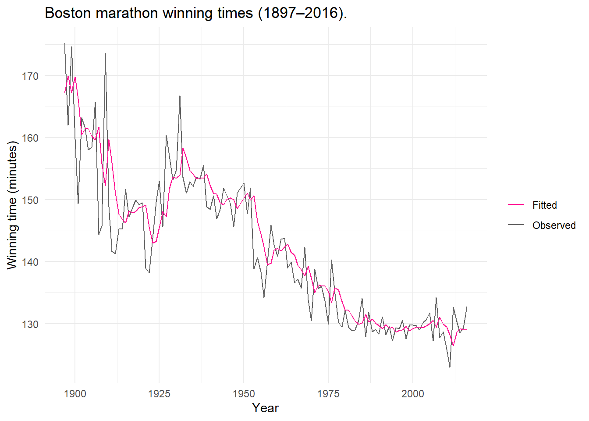
Figure 1 shows that the fitted values follow the observations but lag one step behind them. SES has no trend term, so during the long downward trend (until about 1980) the fitted values almost always predicted a longer winning time than what is actually observed.
c(mine = sqrt(check$sse / (n - 2)), ses = sqrt(fit$model$sigma2)) mine ses
5.518956 5.518956 A typical one-step-ahead forecast is off by about \(\hat{\sigma} \approx 5.52\) minutes. ses() divides the SSE by \(T-2\) to correct for the two estimated parameters.
# Read in data:
data(oil)
# View(oil)
# Fit SES and forecast four years ahead:
oil_fit = ses(oil, h = 4)
oil_fit$model$par alpha l
0.9999 110.8832 
An \(\hat{\alpha} \approx 1\) value means the forecast relies mostly on the last observation. The four forecasts are all equal to 542.3. In Figure 2 the prediction intervals widen with the horizon.
# Standard deviation of the residuals:
sd_oil = sd(residuals(oil_fit))
# Manual 95% prediction interval for first forecast:
PI_oil_upper = oil_fit$mean[1] + 1.96*sd_oil
PI_oil_lower = oil_fit$mean[1] - 1.96*sd_oil
# 95% prediction interval by R:
PI_oil_R = c(oil_fit$lower[1, "95%"], oil_fit$upper[1, "95%"])
kable(data.frame(
Method = c("$\\hat{y} \\pm 1.96\\,s$", "ses()"),
Lower = c(PI_oil_lower, PI_oil_R[1]),
Upper = c(PI_oil_upper, PI_oil_R[2]),
SD = c(paste0("$s$ = ", round(sd_oil, 2)),
paste0("$\\hat{\\sigma}$ = ", round(sqrt(oil_fit$model$sigma2), 2)))
), digits = 2, row.names = FALSE,
col.names = c("Method", "Lower", "Upper", "SD used"))| Method | Lower | Upper | SD used |
|---|---|---|---|
| \(\hat{y} \pm 1.96\,s\) | 448.82 | 635.86 | \(s\) = 47.71 |
| ses() | 446.20 | 638.48 | \(\hat{\sigma}\) = 49.05 |
The two intervals are similar but not identical. This is because they use different estimates of the standard deviation. sd() divides by \(T-1\) (1 degree of freedom for the estimated mean) and subtracts the mean of the residuals. R uses \(\hat{\sigma}^2 = \sum e_t^2/(T-2)\), which does not subtract the mean and divides by \(T-2\) (2 degrees of freedom for the estimated \(\alpha\) and \(\ell_0\)).
For \(h > 1\) we cannot just use \(s\), since the forecast variance grows with the horizon. For SES (the ETS(A,N,N) model) the \(h\)-step forecast variance is \(\sigma^2[1 + \alpha^2(h-1)]\).
h = 1:4
alpha_oil = oil_fit$model$par["alpha"]
# Forecast variance for h = 1, ..., 4:
var_h = oil_fit$model$sigma2 * (1 + alpha_oil^2 * (h - 1))
upper_manual = oil_fit$mean + qnorm(0.975) * sqrt(var_h)
kable(data.frame(h = h,
Upper_manual = as.numeric(upper_manual),
Upper_R = as.numeric(oil_fit$upper[, "95%"])),
digits = 3,
col.names = c("h","Upper manual", "Upper R"))| h | Upper manual | Upper R |
|---|---|---|
| 1 | 638.479 | 638.479 |
| 2 | 678.293 | 678.293 |
| 3 | 708.845 | 708.845 |
| 4 | 734.602 | 734.602 |
The formula gives exactly the same upper limits as R. In the state-space form, \(\ell_t = \ell_{t-1} + \alpha e_t\), so each future innovation enters the level with weight \(\alpha\) and persists in all later levels. Writing \(y_{T+h} = \ell_T + \alpha \sum_{j=1}^{h-1} e_{T+j} + e_{T+h}\), with independent errors \(e_t \sim N(0, \sigma^2)\), gives \(\text{Var}(y_{T+h} \mid y_{1:T}) = \sigma^2[1 + \alpha^2(h-1)]\), which increases linearly in \(h\).
oil_sub = window(oil, start = 1996, end = 2013)
opt_oil = optim(c(0.5, oil_sub[1]),
my_sse,
y = oil_sub,
method = "L-BFGS-B",
lower = c(1e-4, -Inf),
upper = c(0.9999, Inf))
round(rbind(
optim = setNames(opt_oil$par, c("alpha", "l")),
ses = ses(oil_sub)$model$par[c("alpha", "l")]
), 4) alpha l
optim 0.8338 446.5754
ses 0.8339 446.5868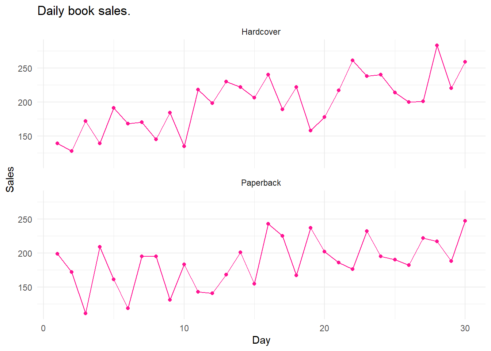
Figure 3 shows that both series are very noisy from day to day and both have an upwards trend over the month. There is no clear seasonal pattern and 30 days of data is insufficient to estimate one reliably. The upwards trend suggests that a flat forecast (SES) will be inadequate.
# SES:
ses_pb = ses(books[, "Paperback"], h = 4)
ses_hc = ses(books[, "Hardcover"], h = 4)
# Holt's linear method:
holt_pb = holt(books[, "Paperback"], h = 4)
holt_hc = holt(books[, "Hardcover"], h = 4)
# Training RMSE:
rmse = function(fc) {
accuracy(fc)["Training set", "RMSE"]
}
rmse_df = data.frame(
Series = c("Paperback", "Hardcover"),
SES = c(rmse(ses_pb), rmse(ses_hc)),
Holt = c(rmse(holt_pb), rmse(holt_hc))
)
kable(rmse_df, digits = 2, row.names = FALSE)| Series | SES | Holt |
|---|---|---|
| Paperback | 33.64 | 31.14 |
| Hardcover | 31.93 | 27.19 |


\[ \begin{aligned} \hat{y}_{t+h \mid t} &= \ell_t + h b_t \\ \ell_t &= \alpha y_t + (1-\alpha)(\ell_{t-1} + b_{t-1}) \\ b_t &= \beta^*(\ell_t - \ell_{t-1}) + (1-\beta^*) b_{t-1} \end{aligned} \]
Holt’s method has a lower training RMSE than SES for both paperback and hardcover sales (paperback: 31.14 vs 33.64; hardcover: 27.19 vs 31.93). However, Holt’s linear method estimates two more parameters than SES, so it should always fit the training data at least as well. Training RMSE does not tell us how well a model will perform out-of-sample. Although SES is just an updating rule, ses() and holt() fit the corresponding state-space models (ETS(A,N,N) and ETS(A,A,N)) with normal errors, so both have a likelihood. This means the models can be compared using AICc, which penalises the additional parameters and is more informative about which model to choose.
# AICc:
kable(data.frame(
Series = c("Paperback", "Hardcover"),
AIC_SES = c(ses_pb$model$aicc, ses_hc$model$aicc),
AIC_Holt = c(holt_pb$model$aicc, holt_hc$model$aicc)
), digits = 1,
row.names = FALSE,
col.names = c("Series", "SES", "Holt"))| Series | SES | Holt |
|---|---|---|
| Paperback | 319.9 | 320.8 |
| Hardcover | 316.8 | 312.7 |
Both series have an upward trend, but the AICc gives different answers for the two. For hardcover sales, Holt’s method has a clearly lower AICc than SES (312.7 vs 316.8), even after the penalty for its two extra parameters. The trend is strong enough that SES’s fitted values lag behind it, so its one-step-ahead errors are larger. For paperback sales, SES has a slightly lower AICc (319.9 vs 320.8). The paperback series is noisier, so the small improvement in fit from accounting for the trend in the data is not worth the two extra parameters. However, since the difference in AICc is less than 1, there is no real evidence that one method is better than the other for paperback sales. Overall, Holt’s method is preferred for the hardcover series and SES for paperback sales but with only 30 days of data it is not reliable for long-term forecasting.
# Training RMSE for each fit:
rmse_ses_pb = rmse(ses_pb)
rmse_holt_pb = rmse(holt_pb)
rmse_ses_hc = rmse(ses_hc)
rmse_holt_hc = rmse(holt_hc)
# 95% interval using RMSE:
lower_rmse = c(ses_pb$mean[1]-1.96*rmse_ses_pb,
holt_pb$mean[1]-1.96*rmse_holt_pb,
ses_hc$mean[1]-1.96*rmse_ses_hc,
holt_hc$mean[1]-1.96*rmse_holt_hc)
upper_rmse = c(ses_pb$mean[1]+1.96*rmse_ses_pb,
holt_pb$mean[1]+1.96*rmse_holt_pb,
ses_hc$mean[1]+1.96*rmse_ses_hc,
holt_hc$mean[1]+1.96*rmse_holt_hc)
# 95% interval by R:
lower_R = c(ses_pb$lower[1, "95%"], holt_pb$lower[1, "95%"],
ses_hc$lower[1, "95%"], holt_hc$lower[1, "95%"])
upper_R = c(ses_pb$upper[1, "95%"], holt_pb$upper[1, "95%"],
ses_hc$upper[1, "95%"], holt_hc$upper[1, "95%"])
kable(data.frame(
Model = c("Paperback SES", "Paperback Holt", "Hardcover SES", "Hardcover Holt"),
Lower_RMSE = lower_rmse,
Upper_RMSE = upper_rmse,
Lower_R = lower_R,
Upper_R = upper_R
), digits = 1, row.names = FALSE,
col.names = c("Model", "Lower (RMSE)", "Upper (RMSE)", "Lower (R)", "Upper (R)"))| Model | Lower (RMSE) | Upper (RMSE) | Lower (R) | Upper (R) |
|---|---|---|---|---|
| Paperback SES | 141.2 | 273.0 | 138.9 | 275.4 |
| Paperback Holt | 148.4 | 270.5 | 143.9 | 275.0 |
| Hardcover SES | 177.0 | 302.1 | 174.8 | 304.3 |
| Hardcover Holt | 196.9 | 303.5 | 192.9 | 307.4 |
The intervals based on the RMSE are slightly narrower than the R intervals. RMSE divides the SSE by \(T\), whereas R divides by the degrees of freedom, \(T-k\), where \(k = 2\) for SES (\(\alpha, \ell_0\)) and \(k = 4\) for Holt (\(\alpha, \beta, \ell_0, b_0\)). Since the series has only 30 observations, this difference is noticeable, especially for Holt’s method. Neither interval accounts for the uncertainty in the parameter estimates, so both are likely too narrow.
In error-correction form, SES and Holt’s method are state-space models with a single source of error:
\[ \begin{aligned} y_t &= \ell_{t-1} + b_{t-1} + e_t, \qquad e_t \sim N(0, \sigma^2) \\ \ell_t &= \ell_{t-1} + b_{t-1} + \alpha e_t \\ b_t &= b_{t-1} + \alpha\beta^* e_t \end{aligned} \]
For SES, \(b_t = 0\) and \(\beta^* = 0\).
# Function to simulate from SES or Holt's method:
# n: no. observations
# par: parameters
sim_fxn = function(n, par) {
l = par$l0
b = par$b0
y = numeric(n)
level = numeric(n)
for (t in 1:n) {
e = rnorm(1, 0, par$sigma)
y[t] = l + b + e # observation equation
l = l + b + par$alpha * e # level
b = b + par$alpha * par$beta * e # trend
level[t] = l
}
list(y = ts(y), level = level)
}set.seed(2026)
# True parameters:
p_ses = list(alpha = 0.4, beta = 0, l0 = 3, b0 = 0, sigma = 0.5)
# Simulate:
sim_ses = sim_fxn(n = 100, par = p_ses)
y_ses = sim_ses$y
# Estimate with optim() and ses():
fit_sim = optim(par = c(0.5, y_ses[1]),
fn = my_sse,
y = y_ses,
method = "L-BFGS-B",
lower = c(0.0001, -Inf),
upper = c(0.9999, Inf))
ses_sim = ses(y_ses)
kable(data.frame(
Method = c("True value", "optim()", "ses()"),
alpha = c(p_ses$alpha, fit_sim$par[1], ses_sim$model$par["alpha"]),
l0 = c(p_ses$l0, fit_sim$par[2], ses_sim$model$par["l"]),
sigma = c(p_ses$sigma, sqrt(fit_sim$value / (100 - 2)), sqrt(ses_sim$model$sigma2))
), digits = 3, row.names = FALSE)| Method | alpha | l0 | sigma |
|---|---|---|---|
| True value | 0.40 | 3.000 | 0.500 |
| optim() | 0.41 | 2.868 | 0.506 |
| ses() | 0.41 | 2.868 | 0.506 |
The estimates from optim() and ses() are identical to 3 decimal places and both are close to the true parameter values. They do not match the true values exactly because they are based on a single simulated series, so some sampling variation is expected.
set.seed(2026)
# True parameters:
p_holt = list(alpha = 0.5, beta = 0.2, l0 = 10, b0 = 0.5, sigma = 1)
y_holt = sim_fxn(n = 100, par = p_holt)$y
holt_sim = holt(y_holt)
kable(data.frame(
Method = c("True value", "holt()"),
alpha = c(p_holt$alpha, holt_sim$model$par["alpha"]),
beta = c(p_holt$alpha * p_holt$beta, holt_sim$model$par["beta"]),
l0 = c(p_holt$l0, holt_sim$model$par["l"]),
b0 = c(p_holt$b0, holt_sim$model$par["b"])
), digits = 3, row.names = FALSE)| Method | alpha | beta | l0 | b0 |
|---|---|---|---|---|
| True value | 0.500 | 0.100 | 10.00 | 0.500 |
| holt() | 0.416 | 0.122 | 11.23 | -0.061 |
holt() reports \(\beta\) on the error-correction scale, \(\beta = \alpha\beta^*\), so the true value is \(0.5 \times 0.2 = 0.1\). The estimates of \(\alpha\) and \(\beta\) are reasonably close to the true values. The initial states are poorly estimated because only the first few observations carry information about them, and a higher starting level combined with a lower starting trend fits those observations almost equally well. This has little effect on the forecasts, which depend on the final level and trend rather than the starting values.
Question: How do different prediction intervals differ and what are their sources of uncertainty?
I used the simulated SES series from Question 5, fitting each method to the first 80 observations and forecasting 10 steps ahead.
Under the ETS(A,N,N) model, \(y_t = \ell_{t-1} + e_t\) with \(e_t \sim N(0, \sigma^2)\) independent. Given \(\alpha\), \(\ell_0\) and \(y_{1:t-1}\), the level \(\ell_{t-1}\) is known, so \(y_t \mid y_{1:t-1} \sim N(\ell_{t-1}, \sigma^2)\). Writing the joint density as a product of these conditional densities gives the likelihood
\[ L(\alpha, \ell_0, \sigma; \boldsymbol{y}) = \prod_{t=1}^{T} \frac{1}{\sigma}\,\phi\!\left(\frac{e_t}{\sigma}\right), \qquad e_t = y_t - \ell_{t-1}, \]
where \(\phi\) is the standard normal density and \(e_t\) depends on \((\alpha, \ell_0)\) through the SES recursion. The priors are \(\alpha \sim \text{Uniform}(0, 1)\) and flat priors on \(\ell_0\) and \(\log\sigma\).
A random walk Metropolis-Hastings algorithm is used to sample from the posterior. The random walk steps are drawn from a multivariate normal distribution, which has support over the entire real line, whereas \(\alpha \in (0, 1)\) and \(\sigma > 0\). Therefore, the parameters are mapped to the real line using
\[ \phi_1 = \text{logit}(\alpha), \qquad \phi_2 = \ell_0, \qquad \phi_3 = \log\sigma, \]
and the random walk is performed over \(\boldsymbol{\phi} = (\phi_1, \phi_2, \phi_3)\), with proposals \(\boldsymbol{\phi}^* = \boldsymbol{\phi} + \boldsymbol{e}\). Since we sample \(\boldsymbol{\phi}\) rather than \(\boldsymbol{\theta} = (\alpha, \ell_0, \sigma)\), the Jacobian of the transformation must be included in the log posterior. The flat prior on \(\log\sigma\) is already defined on the transformed scale, so only \(\alpha\) needs a Jacobian:
\[ \log p(\boldsymbol{\phi}) = \log L(\alpha, \ell_0, \sigma; \boldsymbol{y}) + \log\{\alpha(1-\alpha)\} + \text{const}. \]
Since the proposal is symmetric, \(\boldsymbol{\phi}^*\) is accepted with probability \(\min\{1, \exp[\log p(\boldsymbol{\phi}^*) - \log p(\boldsymbol{\phi})]\}\). The steps are initially drawn from \(\boldsymbol{e} \sim N(\boldsymbol{0}, 0.5^2\,\mathbf{I}_3)\). The first 3 000 iterations are a burn-in, and the covariance matrix \(\Sigma\) of the transformed parameters is estimated from the last 1 500 of these. The retained draws then use \(\boldsymbol{e} \sim N\left(\boldsymbol{0}, \frac{2.38^2}{3}\Sigma\right)\) (Roberts et al., 1997). The chain starts at the ses() estimates.
Each retained draw \((\alpha^{(j)}, \ell_0^{(j)}, \sigma^{(j)})\) is then used to compute \(\ell_T^{(j)}\) and simulate one future path from the state-space model. This gives draws from the posterior predictive distribution of \(y_{T+1}, \ldots, y_{T+h}\).
# 1. SES log-likelihood:
SES_Log_Likelihood = function(y, alpha, l0, sigma) {
e = ses_fxn(y, alpha, l0)$residuals
out = sum(dnorm(e, 0, sigma, log = TRUE))
if (!is.finite(out)) -Inf else out
}
# 2. Parameter transforms:
to_real = function(theta) {
c(qlogis(theta[1]), theta[2], log(theta[3]))
}
from_real = function(phi) {
c(plogis(phi[1]), phi[2], exp(phi[3]))
}
# 3. Log posterior on the transformed scale (priors + Jacobian):
log_target = function(phi, y) {
theta = from_real(phi)
ll = SES_Log_Likelihood(y, theta[1], theta[2], theta[3])
if (!is.finite(ll)) return(-Inf)
# Note: flat priors on l0 and log(sigma) only add a constant
# Uniform(0, 1) prior on alpha x logit Jacobian:
lp_alpha = plogis(phi[1], log.p = TRUE) + plogis(-phi[1], log.p = TRUE)
ll + lp_alpha
}
# 4. Metropolis-Hastings loop:
mh_run = function(phi, jitters, y) {
n = nrow(jitters)
cur = log_target(phi, y)
phi_draws = matrix(NA, n, 3)
accepted = logical(n)
for (i in seq_len(n)) {
prop = phi + jitters[i, ]
prop_val = log_target(prop, y)
log_alpha = if (is.finite(prop_val)) min(0, prop_val - cur) else -Inf
if (log(runif(1)) < log_alpha) {
phi = prop
cur = prop_val
accepted[i] = TRUE
}
phi_draws[i, ] = phi
}
list(phi_draws = phi_draws, last = phi, accept_rate = mean(accepted))
}
# 5. Two-phase sampler:
# Phase 1: burn-in with isotropic jitter, Sigma = covariance of later burn-in draws
# Phase 2: retained iterations with proposals ~ N(0, scale * Sigma)
MH_SES = function(y, init, iterations = 20000, burn = 3000, burn_sd = 0.5,
cov_frac = 0.5, scale = 2.38^2/3) {
phi0 = to_real(init)
# Phase 1:
burn_jit = rmvnorm(burn, mean = rep(0, 3), sigma = burn_sd^2 * diag(3))
b = mh_run(phi0, burn_jit, y)
keep = seq.int(floor(burn * (1 - cov_frac)) + 1, burn)
Sigma = cov(b$phi_draws[keep, , drop = FALSE])
# Phase 2:
main_jit = rmvnorm(iterations, mean = rep(0, 3), sigma = scale * Sigma)
m = mh_run(b$last, main_jit, y)
draws = t(apply(m$phi_draws, 1, from_real))
colnames(draws) = c("alpha", "l0", "sigma")
list(
draws = draws,
burn_accept = b$accept_rate,
accept_rate = m$accept_rate)
}As a check on my sample, I also fitted the same model in Stan (Carpenter et al., 2017) to sample from the posterior. Stan uses the No-U-Turn Sampler (NUTS), an adaptive form of Hamiltonian Monte Carlo that uses the gradient of the log posterior to propose new points. The parameters block restricts \(\alpha\) to \((0, 1)\) and \(\sigma\) to \((0, \infty)\), and Stan maps them to the real line and includes the Jacobian automatically. The model block runs the SES recursion, with \(y_t \sim N(\ell_{t-1}, \sigma^2)\) at each step. The generated quantities block computes \(\ell_T\) for each posterior draw and simulates one future path from the state-space model, which gives draws from the posterior predictive distribution of \(y_{T+1}, \ldots, y_{T+h}\).
# SES model written in Stan:
modelString = "
data {
int<lower=1> N; // number of observations
vector[N] y; // time series
int<lower=1> N_new; // forecast horizon
}
parameters {
real<lower=0, upper=1> alpha; // smoothing parameter
real l0; // initial level
real<lower=0> sigma; // error standard deviation
}
model {
real level = l0;
// Priors (flat priors on l0 and sigma):
alpha ~ uniform(0, 1);
target += -log(sigma); // flat prior on log(sigma)
// Likelihood: one-step-ahead errors are iid N(0, sigma^2)
for (t in 1:N) {
y[t] ~ normal(level, sigma);
level = level + alpha * (y[t] - level);
}
}
generated quantities {
real level_T;
vector[N_new] y_new;
// Final level for this draw:
{
real level = l0;
for (t in 1:N) level = level + alpha * (y[t] - level);
level_T = level;
}
// One future path from the state-space model:
{
real lev = level_T;
for (h in 1:N_new) {
real e = normal_rng(0, sigma);
y_new[h] = lev + e;
lev = lev + alpha * e;
}
}
}
"n_tr = 80
h_max = 10
y_train = window(y_ses, end = n_tr)
y_test = window(y_ses, start = n_tr + 1, end = n_tr + h_max)
# 1. Normal intervals from ses():
fc_norm = ses(y_train, h = h_max, level = 95)
# 2. Manual normal intervals:
a_hat = fc_norm$model$par["alpha"]
res = as.numeric(residuals(fc_norm))
sig2_hat = sum(res^2)/(n_tr-2)
sd_h = sqrt(sig2_hat*(1+a_hat^2*(1:h_max-1)))
manual_lower = fc_norm$mean-qnorm(0.975)*sd_h
manual_upper = fc_norm$mean+qnorm(0.975)*sd_h
# 3. Bootstrapped residuals:
set.seed(2026)
B = 5000
lev = rep(fc_norm$mean[1], B)
y_boot = matrix(NA, B, h_max)
for (k in 1:h_max) {
e = sample(res, size = B, replace = TRUE)
y_boot[, k] = lev + e
lev = lev + a_hat * e
}
boot_pi = apply(y_boot, 2, quantile, probs = c(0.025, 0.975))
# 4. forecast():
fc_fboot = forecast(fc_norm$model, h = h_max, level = 95,
bootstrap = TRUE, simulate = TRUE, npaths = 5000)
# 5. Bayesian posterior predictive:
set.seed(2026)
init = c(fc_norm$model$par["alpha"], fc_norm$model$par["l"], sqrt(fc_norm$model$sigma2))
fit_mh = MH_SES(y_train, init = init)
alpha_d = fit_mh$draws[, "alpha"]
l0_d = fit_mh$draws[, "l0"]
sigma_d = fit_mh$draws[, "sigma"]
# One future path per posterior draw:
n_d = nrow(fit_mh$draws)
y_bayes = matrix(NA, n_d, h_max)
level_T = numeric(n_d)
for (j in 1:n_d) {
lev_j = ses_fxn(y_train, alpha_d[j], l0_d[j])$forecast
level_T[j] = lev_j
for (k in 1:h_max) {
e = rnorm(1, 0, sigma_d[j])
y_bayes[j, k] = lev_j + e
lev_j = lev_j + alpha_d[j] * e
}
}
bayes_pi = apply(y_bayes, 2, quantile, probs = c(0.025, 0.975))
# 6. Bayesian posterior predictive (Stan):
rstan_options(auto_write = TRUE)
stan_mod = stan_model(model_code = modelString)
stan_data = list(N = n_tr, y = as.numeric(y_train), N_new = h_max)
stanFit = sampling(stan_mod,
data = stan_data,
chains = 3,
iter = 6000,
warmup = 1000,
seed = 2026,
refresh = 0)
post_stan = rstan::extract(stanFit)
bayes_pi_stan = apply(post_stan$y_new, 2, quantile, probs = c(0.025, 0.975))
# True values (from simulation):
lev_true = sim_ses$level[n_tr]
sd_true = p_ses$sigma * sqrt(1 + p_ses$alpha^2 * (1:h_max - 1))pi_all = rbind(
data.frame(method = "Normal: ses()", h = 1:h_max,
lower = as.numeric(fc_norm$lower),
upper = as.numeric(fc_norm$upper)),
data.frame(method = "Normal: by hand", h = 1:h_max,
lower = as.numeric(manual_lower),
upper = as.numeric(manual_upper)),
data.frame(method = "Bootstrap: own code", h = 1:h_max,
lower = boot_pi[1, ],
upper = boot_pi[2, ]),
data.frame(method = "Bootstrap: forecast()", h = 1:h_max,
lower = as.numeric(fc_fboot$lower),
upper = as.numeric(fc_fboot$upper)),
data.frame(method = "Bayesian: MH first principles", h = 1:h_max,
lower = bayes_pi[1, ],
upper = bayes_pi[2, ]),
data.frame(method = "Bayesian: Stan", h = 1:h_max,
lower = bayes_pi_stan[1, ],
upper = bayes_pi_stan[2, ]),
data.frame(method = "True parameters", h = 1:h_max,
lower = lev_true - qnorm(0.975) * sd_true,
upper = lev_true + qnorm(0.975) * sd_true)
)
pi_all$width = pi_all$upper-pi_all$lower
# Interval widths at h = 1, 5 and 10:
width_tab = reshape(pi_all[pi_all$h %in% c(1, 5, 10), c("method", "h", "width")],
idvar = "method", timevar = "h", direction = "wide")
names(width_tab) = c("Method", "Width h=1", "Width h=5", "Width h=10")
kable(width_tab, digits = 3, row.names = FALSE)| Method | Width h=1 | Width h=5 | Width h=10 |
|---|---|---|---|
| Normal: ses() | 1.868 | 2.548 | 3.200 |
| Normal: by hand | 1.868 | 2.548 | 3.200 |
| Bootstrap: own code | 1.672 | 2.500 | 3.187 |
| Bootstrap: forecast() | 2.171 | 2.535 | 3.121 |
| Bayesian: MH first principles | 1.902 | 2.658 | 3.359 |
| Bayesian: Stan | 1.885 | 2.657 | 3.379 |
| True parameters | 1.960 | 2.510 | 3.062 |
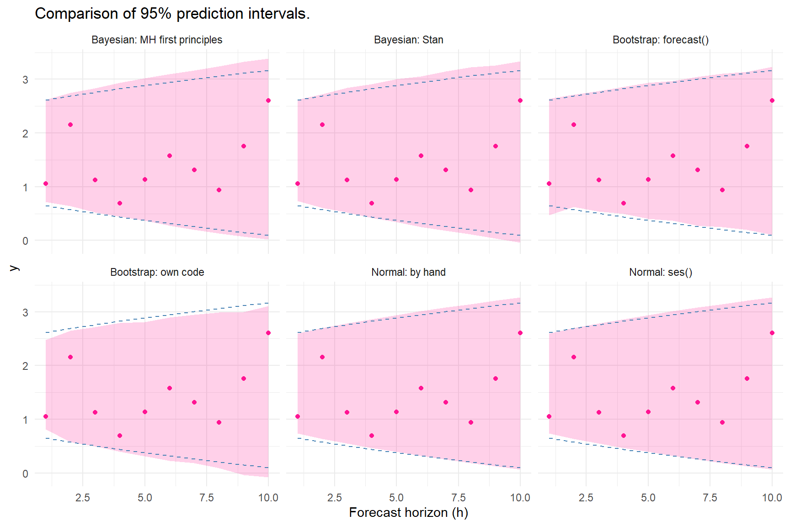
# Posterior summaries (own sampler vs Stan):
stan_sum = summary(stanFit, pars = c("alpha", "l0", "sigma"),
probs = c(0.025, 0.975))$summary
mh_sum = t(apply(fit_mh$draws, 2, function(x) c(mean(x), quantile(x, c(0.025, 0.975)))))
kable(data.frame(
Parameter = c("alpha", "l0", "sigma"),
True = c(p_ses$alpha, p_ses$l0, p_ses$sigma),
MH_mean = mh_sum[, 1],
MH_lower = mh_sum[, 2],
MH_upper = mh_sum[, 3],
Stan_mean = stan_sum[, "mean"],
Stan_lower = stan_sum[, "2.5%"],
Stan_upper = stan_sum[, "97.5%"]
), digits = 3, row.names = FALSE,
col.names = c("Parameter", "True", "MH mean", "MH 2.5%", "MH 97.5%",
"Stan mean", "Stan 2.5%", "Stan 97.5%"))| Parameter | True | MH mean | MH 2.5% | MH 97.5% | Stan mean | Stan 2.5% | Stan 97.5% |
|---|---|---|---|---|---|---|---|
| alpha | 0.4 | 0.481 | 0.334 | 0.662 | 0.482 | 0.339 | 0.648 |
| l0 | 3.0 | 2.943 | 2.141 | 3.749 | 2.927 | 2.108 | 3.763 |
| sigma | 0.5 | 0.481 | 0.412 | 0.564 | 0.481 | 0.411 | 0.564 |
cat("MH acceptance rate (burn-in):", round(fit_mh$burn_accept, 2),
" MH acceptance rate (retained):", round(fit_mh$accept_rate, 2),
" Stan max Rhat:", round(max(stan_sum[, "Rhat"]), 3), "\n")MH acceptance rate (burn-in): 0.11 MH acceptance rate (retained): 0.32 Stan max Rhat: 1 My Metropolis-Hastings sampler and Stan give almost identical posterior means and 95% credible intervals for all three parameters, which confirms that my sampler is correct. All three true values lie inside the credible intervals. The posterior for \(\alpha\) is wide (roughly 0.34 to 0.65), so even with 80 observations there is considerable uncertainty about the smoothing parameter. This is the uncertainty that the plug-in intervals ignore. The initial level \(\ell_0\) has the widest interval relative to its value, because only the first few observations carry information about it (as in Question 5).
Error variance estimates. Each method estimates \(\sigma^2\) slightly differently:
kable(data.frame(
Estimate = c("$\\text{SSE}/(n-2)$ (`ses()`, normal intervals)",
"$\\text{SSE}/n$ (implied by bootstrapping the residuals)",
"$\\widehat{\\text{Var}}(e_t)$ (`var()`: divides by $n-1$, centres at $\\bar{e}$)",
"$E(\\sigma^2 \\mid \\boldsymbol{y})$ (my MH sampler)",
"$E(\\sigma^2 \\mid \\boldsymbol{y})$ (Stan)",
"True $\\sigma^2$"),
sigma2 = c(sig2_hat, sum(res^2) / n_tr, var(res),
mean(sigma_d^2), mean(post_stan$sigma^2), p_ses$sigma^2)
), digits = 4, row.names = FALSE, escape = FALSE,
col.names = c("Estimate", "$\\hat{\\sigma}^2$"))| Estimate | \(\hat{\sigma}^2\) |
|---|---|
\(\text{SSE}/(n-2)\) (ses(), normal intervals) |
0.2271 |
| \(\text{SSE}/n\) (implied by bootstrapping the residuals) | 0.2214 |
\(\widehat{\text{Var}}(e_t)\) (var(): divides by \(n-1\), centres at \(\bar{e}\)) |
0.2231 |
| \(E(\sigma^2 \mid \boldsymbol{y})\) (my MH sampler) | 0.2326 |
| \(E(\sigma^2 \mid \boldsymbol{y})\) (Stan) | 0.2327 |
| True \(\sigma^2\) | 0.2500 |
What I found:
ses() exactly, so ses() uses \(\hat{\sigma}^2 = \text{SSE}/(n-2)\) and \(\text{Var}(y_{T+h}) = \sigma^2[1+\alpha^2(h-1)]\).ses() interval is too narrow at \(h=1\) but too wide at \(h=10\). In this realisation \(\hat{\sigma}\) is slightly too small and \(\hat{\alpha}\) slightly too large, which shows that the plug-in interval depends on how good the parameter estimates happen to be.A credible interval describes uncertainty about an unknown quantity, here the current level \(\ell_T\). A prediction interval describes uncertainty about a future observation \(y_{T+h}\), so it also includes the future error \(e_{T+h}\).
ci_level = quantile(level_T, c(0.025, 0.975))
pi_y1 = bayes_pi[, 1]
kable(data.frame(
Interval = c("Credible interval for $\\ell_T$",
"Prediction interval for $y_{T+1}$"),
Lower = as.numeric(c(ci_level[1], pi_y1[1])),
Upper = as.numeric(c(ci_level[2], pi_y1[2]))
), digits = 3, row.names = FALSE)| Interval | Lower | Upper |
|---|---|---|
| Credible interval for \(\ell_T\) | 1.588 | 1.739 |
| Prediction interval for \(y_{T+1}\) | 0.717 | 2.619 |
The interval for the level is much narrower than the prediction interval, because most of the uncertainty about a single future observation comes from the noise \(e_{T+1}\), not from estimating the level.
A 95% prediction interval should contain the future value 95% of the time. I simulated 300 series (\(n = 30\)), fitted ses() and checked how often the 95% interval contained the true \(y_{T+1}\) and \(y_{T+10}\).
set.seed(4)
cover = t(replicate(300, {
sim = sim_fxn(n = 40, par = p_ses)$y
tr = window(sim, end = 30)
fc = ses(tr, h = 10, level = 95)
future = as.numeric(window(sim, start = 31))
c(h1 = future[1] >= fc$lower[1] & future[1] <= fc$upper[1],
h10 = future[10] >= fc$lower[10] & future[10] <= fc$upper[10])
}))
colMeans(cover) h1 h10
0.96 0.95 The coverage is 96% at \(h=1\) and 95% at \(h=10\). With 300 replicates the Monte Carlo standard error is about 1.3%, so both are consistent with the nominal 95%. Even though the plug-in intervals ignore the uncertainty in \(\hat{\alpha}\) and \(\hat{\sigma}\), this has little effect on coverage here. One reason is that dividing the SSE by \(n-2\) rather than \(n\) already widens the intervals slightly. Another is that the errors really are normal and the model is correct, which is the best case for these intervals. With real data, where the model is only an approximation, the coverage would usually be lower.
Time series regression models a response \(y_t\) as a function of explanatory variables \(\mathbf{x}_t\), combining the regression framework with the dependence structure of a time series. This lets us estimate and interpret the effect of \(\mathbf{x}_t\) on \(y_t\), and can improve forecasts beyond what the series’ own past provides. Errors are usually serially correlated, which violates the independence assumption underlying ordinary least squares inference.
With autocorrelated errors, OLS estimates are still unbiased (if \(x\) is exogenous) but no longer minimum variance, and the usual standard errors are wrong. Under positive autocorrelation they are typically too small, so OLS is overconfident: intervals are too narrow and variables can appear significant when they are not (spurious regression).
The models differ in where the time dependence enters: through lags of the response, lags of the explanatory variables, or the errors (Table 2).
| Model | Equation | Dependence through | Use when |
|---|---|---|---|
| ARMAX | \(y_t = \beta_0 + \beta_1 x_t + \phi_1 y_{t-1} + \dots + e_t + \theta_1 e_{t-1} + \dots\) | lagged response | \(y\) depends on its own past (e.g. a stock that accumulates) |
| Regression with ARMA errors | \(y_t = \beta_0 + \beta_1 x_t + \eta_t, \quad \phi(L)\eta_t = \theta(L)e_t\) | the errors | the effect of \(x\) on the mean of \(y\) is of interest |
| Distributed lag | \(y_t = \beta_0 + \beta_1 x_t + \beta_2 x_{t-1} + \dots + e_t\) | lagged explanatory variables | the effect of \(x\) takes time to work through |
| VAR(\(p\)) | \(\mathbf{y}_t = \mathbf{c} + A_1\mathbf{y}_{t-1} + \dots + A_p\mathbf{y}_{t-p} + \boldsymbol{\varepsilon}_t\) | lags of all variables | the variables influence each other (feedback) |
| GARMA | see below | the errors, on the link scale | non-normal responses (counts, proportions) |
In the ARMAX model \(\beta_1\) is only the immediate effect of \(x\), because \(y_{t-1}\) carries part of its past effect. With ARMA errors, \(\beta_1\) keeps its usual meaning as the effect of \(x\) on the mean of \(y\). This model is fitted with arima(..., xreg = ) (maximum likelihood via the state-space form) or gls(). Each VAR equation can be fitted by OLS, and the model is used for Granger causality and impulse responses. GARMA extends ARMA errors to non-normal responses in the same way that GLMs extend linear regression:
\[ g(\mu_t) = \mathbf{x}_t'\boldsymbol{\beta} + \sum_{j=1}^{p} \phi_j\left[g(y_{t-j}) - \mathbf{x}_{t-j}'\boldsymbol{\beta}\right] + \sum_{j=1}^{q} \theta_j\left[g(y_{t-j}) - g(\mu_{t-j})\right]. \]
In Project 2 I used regression with SARIMA errors for dam levels with lagged sea surface temperature as a predictor. Lagged SST looked significant under OLS, but not once the errors were modelled.
I reproduced the example in Section 4.1 of the regression chapter. The data are simulated from
\[ y_t = 1 - 4x_t + \eta_t, \qquad \eta_t = \phi\eta_{t-1} + e_t, \qquad e_t \sim N(0, 1), \quad \phi = 0.95, \]
so the true slope is \(-4\) and the errors are a very persistent AR(1).
library(dynlm) # ARMAX models with L()
library(nlme) # gls()
set.seed(12)
eta = numeric(100)
eta[1] = 10
x = rnorm(100, 5, 1)
phi = 0.95
# Auto-correlated errors:
for (i in 2:100) {
eta[i] = phi*eta[i-1]+rnorm(1,0,1)
}
# Response, linear relationship + auto-correlated errors:
y = 1-4*x+eta
The errors start at \(\eta_1 = 10\) and drift slowly back towards zero (Figure 6). With \(\phi = 0.95\) they behave almost like a random walk, so the response wanders, even though it is a linear function of \(x\) plus noise.
a1 = lm(y ~ x)
summary(a1)
Call:
lm(formula = y ~ x)
Residuals:
Min 1Q Median 3Q Max
-8.4110 -3.2916 0.0579 2.6931 11.2852
Coefficients:
Estimate Std. Error t value Pr(>|t|)
(Intercept) 8.637 2.497 3.46 0.000803 ***
x -5.140 0.495 -10.38 < 2e-16 ***
---
Signif. codes: 0 '***' 0.001 '**' 0.01 '*' 0.05 '.' 0.1 ' ' 1
Residual standard error: 4.261 on 98 degrees of freedom
Multiple R-squared: 0.5238, Adjusted R-squared: 0.5189
F-statistic: 107.8 on 1 and 98 DF, p-value: < 2.2e-16confint(a1) 2.5 % 97.5 %
(Intercept) 3.682495 13.59077
x -6.121981 -4.15716
OLS gives a slope of -5.14 instead of \(-4\), and the 95% confidence interval (-6.12 to -4.16) misses the true value completely. OLS is unbiased on average but with errors this persistent one sample can land far from the truth. The standard error is calculated as if the errors were independent, so it is too small and OLS is overconfident. The residual ACF decays slowly and the PACF has a single large spike at lag 1 (Figure 7). This is indicative of AR(1) errors.
\[ y_t = \beta_0 + \beta_1 x_t + \phi y_{t-1} + e_t. \]
y_ts = ts(y)
x_ts = ts(x)
arx1 = dynlm(y_ts ~ x_ts + L(y_ts, 1))
summary(arx1)
Time series regression with "ts" data:
Start = 2, End = 100
Call:
dynlm(formula = y_ts ~ x_ts + L(y_ts, 1))
Residuals:
Min 1Q Median 3Q Max
-5.8881 -1.7148 0.1317 1.5929 6.8288
Coefficients:
Estimate Std. Error t value Pr(>|t|)
(Intercept) 14.87839 1.56945 9.48 1.95e-15 ***
x_ts -4.50627 0.29577 -15.24 < 2e-16 ***
L(y_ts, 1) 0.55852 0.04114 13.58 < 2e-16 ***
---
Signif. codes: 0 '***' 0.001 '**' 0.01 '*' 0.05 '.' 0.1 ' ' 1
Residual standard error: 2.489 on 96 degrees of freedom
Multiple R-squared: 0.8321, Adjusted R-squared: 0.8286
F-statistic: 237.9 on 2 and 96 DF, p-value: < 2.2e-16# Lagged response:
y_lag = c(NA, y[-length(y)])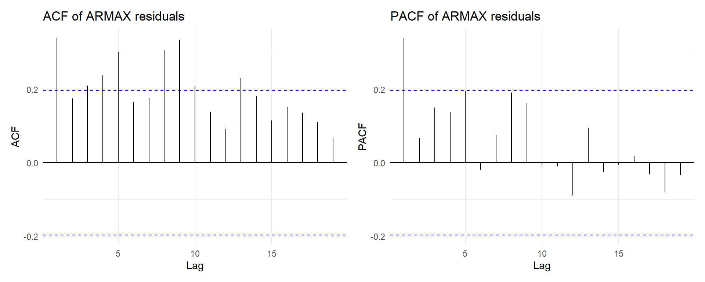
The residual autocorrelation is much smaller but still present (Figure 8). The coefficient of \(x\) (-4.506) is closer to \(-4\), but it only measures the immediate effect of \(x\), since \(y_{t-1}\) carries part of the past effect of \(x\). If \(x\) increased by one unit permanently, the long-run effect would be \(\hat{\beta}_1/(1-\hat{\phi}) = -10.21\), which is far from the true \(-4\). Thus, the ARMAX model is misspecified. The data were generated with AR(1) errors, which also require the term \(-\phi\beta_1 x_{t-1}\).
# Autoregressive distributed lag model (x_{t-1} included):
x_lag = c(NA, x[-length(x)])
adl = lm(y ~ y_lag + x + x_lag)
coef(adl)(Intercept) y_lag x x_lag
-0.1922132 0.9576004 -3.9691383 3.8473506 c(coef_x_lag = unname(coef(adl)["x_lag"]),
minus_phi_times_beta = unname(-coef(adl)["y_lag"] * coef(adl)["x"])) coef_x_lag minus_phi_times_beta
3.847351 3.800848 The inclusion of \(x_{t-1}\) results in the autoregressive distributed lag model. Its coefficients approximately satisfy the “common factor” restriction \(\gamma = -\phi\beta_1\), where \(\gamma\) is the coefficient of \(x_{t-1}\). This is what the regression with AR(1) errors implies. Thus, the regression model with AR(1) errors is an ARMAX model that includes \(x_{t-1}\) with its coefficient restricted to \(-\phi \beta_1\).
a2 = arima(y, order = c(1, 0, 0), xreg = x)
a2
Call:
arima(x = y, order = c(1, 0, 0), xreg = x)
Coefficients:
ar1 intercept x
0.9762 4.7905 -3.9967
s.e. 0.0188 3.2704 0.0830
sigma^2 estimated as 1.021: log likelihood = -144.46, aic = 296.92When we model the errors as an AR(1) process we obtain a slope of -3.997 with a standard error of 0.083. This is very close to the true value of \(-4\), and the standard error is much smaller when compared to OLS (0.495). The intercept is poorly estimated (4.79 instead of 1). Since \(\hat{\phi}\) is close to 1 the errors behave almost as a random walk. Therefore, the intercept and the level of the error process are difficult to separate. In this simulation the errors did not start at their mean of 0 but at \(\eta_1 = 10\). arima() estimates the model by maximum likelihood using the state-space form and the Kalman filter.
Equation 1 in the notes motivates a transformation that removes the serial correlation. Defining \(y_t^* = y_t - \phi y_{t-1}\) and \(x_t^* = x_t - \phi x_{t-1}\) gives
\[ y_t^* = \beta_0(1-\phi) + \beta_1 x_t^* + e_t, \]
where \(e_t\) is white noise, so the OLS assumptions hold for the transformed model. Since \(\phi\) is unknown, it is replaced by \(\hat{\phi}\), the lag 1 autocorrelation of the OLS residuals, which makes this a feasible two-step estimator.
phi_hat = acf(resid(a1), plot = FALSE)$acf[2]
phi_hat[1] 0.9037115y_star = y-phi_hat*y_lag
x_star = x-phi_hat*x_lag
a_star = lm(y_star ~ x_star)
summary(a_star)$coefficients Estimate Std. Error t value Pr(>|t|)
(Intercept) 0.202568 0.11196307 1.80924 7.351125e-02
x_star -3.992501 0.08782497 -45.45975 3.308591e-67The estimated slope (-3.993) is close to the true value of \(-4\), even though \(\hat{\phi} = 0.9\) underestimates \(\phi = 0.95\). However, the response is now \(y_t^*\) as opposed to \(y_t\), so \(\beta_1\) describes how \(y\) responds to \(x\) after removing the carried-over error. When \(\phi\) is close to 1 this is approximately the change in \(y\) for a change in \(x\). The intercept estimates \(\beta_0(1-\phi)\), not \(\beta_0\). Since the response differs, the AIC of this model cannot be compared with those of the other models.
m_gls = gls(y ~ x, correlation = corAR1(), method = "ML")
summary(m_gls)$tTable Value Std.Error t-value p-value
(Intercept) 4.789836 3.2008467 1.496428 1.377559e-01
x -3.996669 0.0838432 -47.668376 1.315676e-69coef(m_gls$modelStruct$corStruct, unconstrained = FALSE) # estimated phi Phi
0.9762058 gls() estimates the regression coefficients and the AR(1) parameter jointly by maximum likelihood. For a given \(\phi\), the coefficients are the GLS estimator from the notes,
\[ \hat{\boldsymbol{\beta}} = (Z'V^{-1}Z)^{-1}Z'V^{-1}\mathbf{y}, \qquad V_{ij} \propto \phi^{|i-j|}, \]
where \(Z\) is the design matrix and \(V\) is the correlation structure implied by AR(1) errors. Iterating between estimating \(\phi\) from the residuals and refitting with the updated \(V\) (feasible GLS) gives very similar estimates. The estimates match those from arima() because both fit the same model by maximum likelihood.
For a regression with AR(1) errors, the independent errors are \(e_t = (y_t - \beta_0 - \beta_1 x_t) - \phi(y_{t-1} - \beta_0 - \beta_1 x_{t-1})\), so the parameters can be estimated by minimising \(\sum_{t=2}^{n} e_t^2\).
# Sum of squared errors:
sse_ar1_err = function(par, y, x) {
b0 = par[1]
b1 = par[2]
phi = par[3]
eta = y-b0-b1*x # regression errors
e = eta[-1]-phi*eta[-length(eta)] # independent errors
sum(e^2)
}
fit_sse = optim(par = c(coef(a1), 0.5), fn = sse_ar1_err, y = y, x = x,
method = "BFGS", control = list(maxit = 1000))
# Fitting arima() for comparison:
a2_css = arima(y, order = c(1, 0, 0), xreg = x, method = "CSS")
kable(data.frame(
Method = c("My SSE + optim()", "arima(), CSS", "arima(), ML", "gls(), ML", "True value"),
Intercept = c(fit_sse$par[1], coef(a2_css)["intercept"], coef(a2)["intercept"],
coef(m_gls)[1], 1),
Slope = c(fit_sse$par[2], coef(a2_css)[3], coef(a2)[3], coef(m_gls)[2], -4),
phi = c(fit_sse$par[3], coef(a2_css)["ar1"], coef(a2)["ar1"],
coef(m_gls$modelStruct$corStruct, unconstrained = FALSE), 0.95)
), digits = 3, row.names = FALSE)| Method | Intercept | Slope | phi |
|---|---|---|---|
| My SSE + optim() | 1.134 | -3.993 | 0.956 |
| arima(), CSS | 1.134 | -3.993 | 0.956 |
| arima(), ML | 4.790 | -3.997 | 0.976 |
| gls(), ML | 4.790 | -3.997 | 0.976 |
| True value | 1.000 | -4.000 | 0.950 |
Minimising the sum of squared independent errors with optim() reproduces arima(method = "CSS") exactly, since both use the same conditional sum of squares criterion. All four methods agree closely on the slope and \(\phi\), but differ on the intercept. CSS conditions on the first observation, so the starting value \(\eta_1 = 10\) has no influence, and the intercept (1.134) is close to the true value of 1. Maximum likelihood (arima() and gls()) treats \(\eta_1\) as a draw from the stationary distribution with mean 0, so the intercept is pushed up to 4.790 to account for the high starting value.
kable(data.frame(
Model = c("a1: OLS", "arx1: ARMAX", "a2: AR(1) errors"),
df = c(3, 4, 4),
AIC = c(AIC(a1), AIC(arx1), AIC(a2))
), digits = 1, row.names = FALSE)| Model | df | AIC |
|---|---|---|
| a1: OLS | 3 | 577.7 |
| arx1: ARMAX | 4 | 466.5 |
| a2: AR(1) errors | 4 | 296.9 |
The regression with AR(1) errors has the lowest AIC (296.9, compared with 466.5 for the ARMAX model and 577.7 for OLS). This is expected, since it matches the data-generating process. The differences in AIC are large so the rankings hold even though the comparison is only approximate. The ARMAX model is fitted to 99 observations, whereas OLS and the exact maximum likelihood fit from arima() use all 100. In addition, arima() evaluates the likelihood through the state-space representation, which is not identical to the Gaussian likelihood lm() computes for independent errors.
Forecasting \(y_{T+h}\) requires values of \(x_{T+h}\), which are not observed. Here \(x\) is assumed to remain at its sample mean for the next 10 periods. The \(h\)-step forecast is then
\[ \hat{y}_{T+h} = \hat{\beta}_0 + \hat{\beta}_1 x_{T+h} + \hat{\phi}^h \hat{\eta}_T, \]
so the error component decays geometrically from its last estimated value \(\hat{\eta}_T\) towards zero, and the forecasts converge to the regression line \(\hat{\beta}_0 + \hat{\beta}_1 \bar{x}\).
x_future = rep(mean(x), 10)
fc_a2 = predict(a2, n.ahead = 10, newxreg = x_future)
fc_ex41 = data.frame(
t = 101:110,
fc = as.numeric(fc_a2$pred),
lower = as.numeric(fc_a2$pred - 1.96 * fc_a2$se),
upper = as.numeric(fc_a2$pred + 1.96 * fc_a2$se)
)
kable(fc_ex41, digits = 2)| t | fc | lower | upper |
|---|---|---|---|
| 101 | -16.76 | -18.74 | -14.78 |
| 102 | -16.72 | -19.49 | -13.95 |
| 103 | -16.68 | -20.03 | -13.33 |
| 104 | -16.64 | -20.47 | -12.82 |
| 105 | -16.61 | -20.83 | -12.38 |
| 106 | -16.57 | -21.14 | -11.99 |
| 107 | -16.53 | -21.42 | -11.65 |
| 108 | -16.50 | -21.66 | -11.33 |
| 109 | -16.46 | -21.88 | -11.05 |
| 110 | -16.43 | -22.08 | -10.78 |
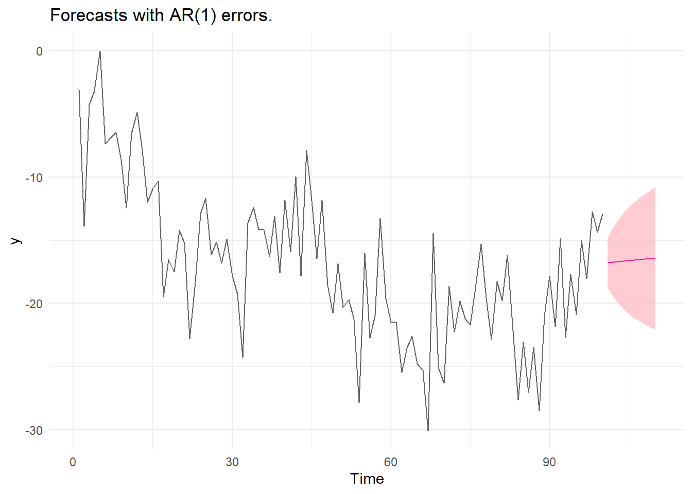
The prediction intervals widen quickly with the horizon (Figure 9). This is due to \(\hat{\phi}\) being close to 1, so the error process has long memory. The forecast variance \(\sigma^2(1 + \phi^2 + \dots + \phi^{2(h-1)})\) keeps growing. These intervals are conditional on the future values of \(x\) (assumed known). If \(x\) was forecast as well, they would underestimate the uncertainty.
A state-space model has two equations: an observation equation that links what we observe to an unobserved state, and a state equation that describes how the state changes over time.
\[ \begin{aligned} \text{Observation:} \quad y_t &= F_t\theta_t + v_t, \qquad v_t \sim N(0, V) \\ \text{State:} \quad \theta_t &= G_t\theta_{t-1} + w_t, \qquad w_t \sim N(0, W) \\ \text{Prior:} \quad \theta_0 &\sim N(m_0, C_0) \end{aligned} \]
| Model | State \(\theta_t\) | \(F_t\) | \(G_t\) | Noise |
|---|---|---|---|---|
| Local level (random walk plus noise) | \(\mu_t\) | \(1\) | \(1\) | \(V\), \(W\) |
| Local linear trend | \((\mu_t, \beta_t)'\) | \((1, 0)\) | \(\begin{pmatrix} 1 & 1 \\ 0 & 1 \end{pmatrix}\) | \(V\), \(W = \text{diag}(\sigma^2_\mu, \sigma^2_\beta)\) |
| AR(2) | \((y_t, y_{t-1})'\) | \((1, 0)\) | \(\begin{pmatrix} \phi_1 & \phi_2 \\ 1 & 0 \end{pmatrix}\) | \(V = 0\), \(W = \text{diag}(\sigma^2, 0)\) |
| ARMA(1,1) | \((y_t, \theta e_t)'\) | \((1, 0)\) | \(\begin{pmatrix} \phi & 1 \\ 0 & 0 \end{pmatrix}\) | \(V = 0\), \(w_t = (e_t, \theta e_t)'\) |
| SES / ETS(A,N,N) | \(\ell_t\) | \(1\) | \(1\) | one error: \(y_t = \ell_{t-1} + e_t\), \(\ell_t = \ell_{t-1} + \alpha e_t\) |
| Time-varying regression | \((a_t, b_t)'\) | \((1, z_t)\) | \(I_2\) | \(V\), \(W = \text{diag}(\sigma^2_a, \sigma^2_b)\) |
Table 3 shows that very different models fit into the same two equations. An ARMA model is a state-space model with no observation noise (\(V = 0\)), where the state stores the recent values that the model needs to remember, while the structural models have noise in both equations.
Exponential smoothing models (ETS) are state-space models with a single source of error (the same \(e_t\) drives the observation and the state), while the structural models in dlm have two independent sources of error (\(v_t\) and \(w_t\)).
arima() computes the likelihood), and every linear structural model implies an ARIMA model for its differences. For example, the local level model implies \(\Delta y_t = w_t + v_t - v_{t-1}\), an MA(1), so it is an ARIMA(0,1,1). The linear growth model gives an ARIMA(0,2,2).dlmA dynamic linear model (DLM) is a linear, Gaussian state-space model. “Dynamic” means that the state \(\theta_t\) (level, slope, seasonal effects, regression coefficients) is allowed to change over time.
The local level model has \(F = G = 1\): the level follows a random walk and we observe it with noise.
# Simulate from a random walk plus noise model:
rwpn = function(V = 0.8, W = 0.2, m0 = 0, C0 = 100, n = 100) {
y = numeric(n)
mu = numeric(n)
for (i in 1:n) {
if (i == 1) {
mu[i] = rnorm(1, m0, sqrt(C0)) # initial state from the prior
} else {
mu[i] = rnorm(1, mu[i - 1], sqrt(W)) # state equation
}
y[i] = rnorm(1, mu[i], sqrt(V)) # observation equation
}
return(list(y = y, mu = mu))
}
set.seed(10)
sim_rw = rwpn()
y_rw = sim_rw$yrnorm() takes a standard deviation
In the original prac code rnorm(1, m0, C0) uses \(C_0 = 100\) as a standard deviation, while the model treats \(V\), \(W\) and \(C_0\) as variances. This is why the original simulated series started around \(-11\). I used sqrt() so that the simulation matches the model that is fitted below.
# Define the model through its matrices:
mod_rwpn = dlm(FF = 1, V = 0.8, GG = 1, W = 0.2, m0 = 0, C0 = 100)
mod_rwpn$FF
[,1]
[1,] 1
$V
[,1]
[1,] 0.8
$GG
[,1]
[1,] 1
$W
[,1]
[1,] 0.2
$m0
[1] 0
$C0
[,1]
[1,] 100# Equivalent shortcut (dV and dW are the diagonal elements of V and W):
dlmModPoly(order = 1, dV = 0.8, dW = 0.2, C0 = 100)$FF
[,1]
[1,] 1
$V
[,1]
[1,] 0.8
$GG
[,1]
[1,] 1
$W
[,1]
[1,] 0.2
$m0
[1] 0
$C0
[,1]
[1,] 100order = 1 gives a random walk for the state (local level model) and order = 2 gives a random walk plus drift for the level (local linear trend). Individual matrices can be changed with the replacement functions:
mod_copy = mod_rwpn
C0(mod_copy) = 80
C0(mod_copy) [,1]
[1,] 80filt_rw = dlmFilter(y_rw, mod_rwpn)
names(filt_rw)[1] "y" "mod" "m" "U.C" "D.C" "a" "U.R" "D.R" "f" # Note: m has one more element than y (first element is m0)
length(filt_rw$m)[1] 101# Filtered variances C_t (from SVD stored by dlm):
C_rw = unlist(dlmSvd2var(filt_rw$U.C, filt_rw$D.C))
# Kalman smoother:
smooth_rw = dlmSmooth(filt_rw)
S_rw = unlist(dlmSvd2var(smooth_rw$U.S, smooth_rw$D.S))dlmFilter() returns the filtered states m (\(\theta_t \mid y_{1:t} \sim N(m_t, C_t)\)), the one-step-ahead state predictions a (\(\theta_t \mid y_{1:t-1} \sim N(a_t, R_t)\)), the one-step-ahead forecasts of the observations f, and the variances in SVD form (U.C, D.C, U.R, D.R). dlmSvd2var() turns these back into variance matrices.
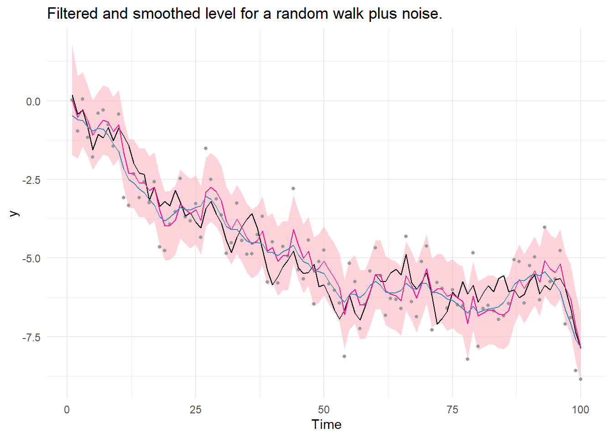
The filtered level (pink) only uses observations up to time \(t\), so it reacts to changes with a delay. The smoothed level (blue) also uses later observations, so it is smoother and closer to the true level (black) (Figure 10). The smoothed variances are smaller than the filtered ones (average 0.198 vs 0.319), except at the end of the series where they are the same: at \(t = T\) there is no future information to add.
If \(V\) and \(W\) are unknown, the Kalman filter gives the likelihood through the one-step-ahead prediction errors, and dlmMLE() passes it to optim(). The variances are estimated on the log scale so they stay positive.
# Function to build model from log parameters:
build_rw = function(par) {
dlmModPoly(order = 1, dV = exp(par[1]), dW = exp(par[2]))
}
# Maximise the likelihood:
fit_rw = dlmMLE(y_rw, parm = c(0, 0), build = build_rw, hessian = TRUE)
fit_rw$convergence # 0 = converged[1] 0# Estimates with 95% CIs (log scale, then back-transformed):
se_log = sqrt(diag(solve(fit_rw$hessian)))
kable(data.frame(
Parameter = c("V", "W"),
True = c(0.8, 0.2),
Estimate = exp(fit_rw$par),
Lower = exp(fit_rw$par - 1.96 * se_log),
Upper = exp(fit_rw$par + 1.96 * se_log)
), digits = 3, row.names = FALSE)| Parameter | True | Estimate | Lower | Upper |
|---|---|---|---|---|
| V | 0.8 | 0.724 | 0.505 | 1.038 |
| W | 0.2 | 0.147 | 0.061 | 0.351 |
The confidence intervals are wide, especially for \(W\). With 100 observations it is hard to separate “the level moved” from “the observation was noisy”, because both create variation in \(y_t\). The signal-to-noise ratio \(W/V\) is what matters for the filter.
For a random walk plus noise model, the forecast is flat at the last filtered level (just like SES), and the uncertainty grows linearly with the horizon.
mod_rw_fit = build_rw(fit_rw$par)
filt_rw_fit = dlmFilter(y_rw, mod_rw_fit)
fc_rw = dlmForecast(filt_rw_fit, nAhead = 10)
str(fc_rw, max.level = 1)List of 4
$ a: num [1:10, 1] -7.72 -7.72 -7.72 -7.72 -7.72 ...
$ R:List of 10
$ f: num [1:10, 1] -7.72 -7.72 -7.72 -7.72 -7.72 ...
$ Q:List of 10dlmForecast() returns forecasts of the state (a, with variances R) and of the observations (f, with variances Q). Note that \(Q_t = R_t + V\).
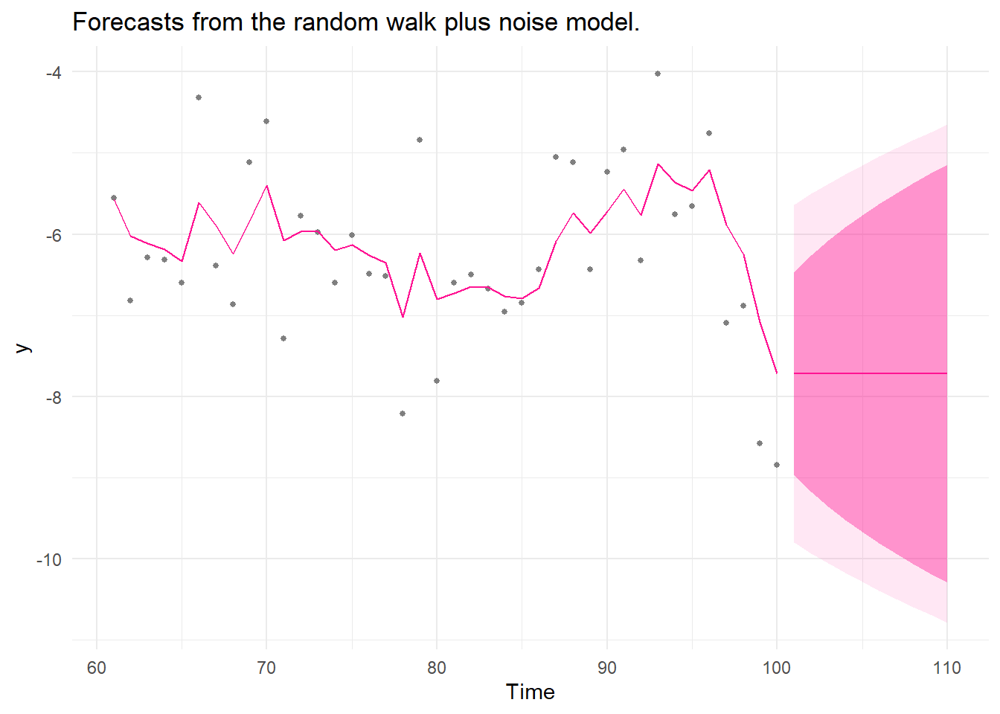
The original prac plotted \(a_t \pm 1.96\sqrt{R_t}\). That is an interval for the future level, not for future observations. A prediction interval for \(y_{T+h}\) must use \(Q_t = R_t + V\), which also includes the observation noise. In Figure 11 the prediction interval is much wider.
# Read in data:
data(Nile)
# View(Nile)
# Local level model with unknown variances:
build_nile = function(par) {
dlmModPoly(order = 1, dV = exp(par[1]), dW = exp(par[2]))
}
fit_nile = dlmMLE(Nile, parm = c(log(10000), log(1000)), build = build_nile)
var_nile = exp(fit_nile$par)
names(var_nile) = c("V", "W")
var_nile V W
15099.795 1468.429 mod_nile = build_nile(fit_nile$par)
filt_nile = dlmFilter(Nile, mod_nile)
smooth_nile = dlmSmooth(filt_nile)
fc_nile = dlmForecast(filt_nile, nAhead = 10)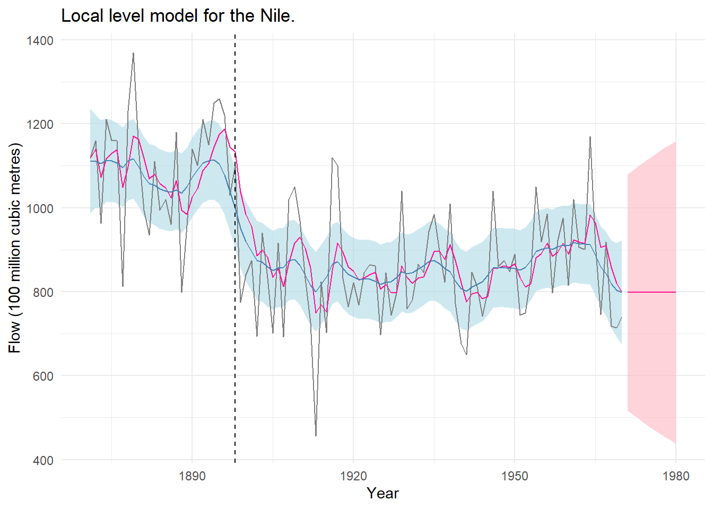
The estimated observation variance (\(\hat{V} = 1.51\times 10^{4}\)) is about \(10\) times larger than the level variance (\(\hat{W} = 1468\)), so the filter changes the level slowly and treats most year-to-year variation as noise. The smoothed level (Figure 12) shows the drop in flow around 1898 very clearly. Because the smoother uses future observations, it starts dropping before 1898, while the filtered level only reacts afterwards.
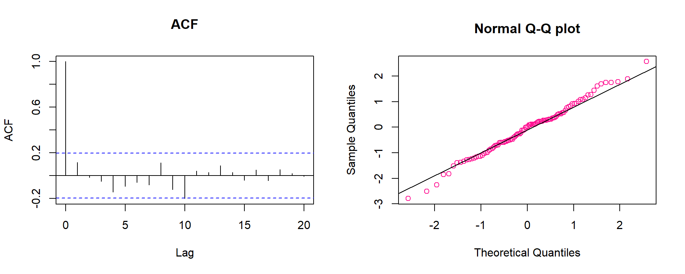
Box.test(res_nile, lag = 10, type = "Ljung-Box", fitdf = 2)
Box-Ljung test
data: res_nile
X-squared = 13.643, df = 8, p-value = 0.09154The standardised prediction errors are the model’s residuals. If the model is adequate they should look like independent \(N(0,1)\) values. Here the ACF and the Ljung-Box test (p = 0.092) are used to check for leftover autocorrelation (Figure 13).
dlmModPoly() with its default order = 2 gives the local linear trend (linear growth) model, which adds a slope that can also change over time.
build_llt = function(par) {
dlmModPoly(order = 2, dV = exp(par[1]), dW = exp(par[2:3]))
}
fit_llt = dlmMLE(Nile, parm = c(log(15000), log(1000), log(10)), build = build_llt)
var_llt = exp(fit_llt$par)
names(var_llt) = c("V", "W_level", "W_slope")
var_llt V W_level W_slope
1.467938e+04 1.751855e+03 7.364238e-06 # Compare with local level model (dlmMLE returns -logL):
kable(data.frame(
Model = c("Local level", "Local linear trend"),
Parameters = c(2, 3),
neg_loglik = c(fit_nile$value, fit_llt$value),
AIC = c(2 * fit_nile$value + 2 * 2, 2 * fit_llt$value + 2 * 3)
), digits = 2, row.names = FALSE)| Model | Parameters | neg_loglik | AIC |
|---|---|---|---|
| Local level | 2 | 549.69 | 1103.38 |
| Local linear trend | 3 | 556.00 | 1118.00 |
The estimated slope variance is very small, so the slope hardly changes, and adding it does not improve the fit enough to justify the extra parameter. This makes sense, since the Nile has a level shift, not a trend. (The comparison is only approximate, because the two models have a different number of diffuse initial states, which affects the first few likelihood terms.)
# Remove 1910-1915:
nile_na = Nile
nile_na[40:45] = NA
fit_na = dlmMLE(nile_na, parm = c(log(10000), log(1000)), build = build_nile)
filt_na = dlmFilter(nile_na, build_nile(fit_na$par))
C_na = unlist(dlmSvd2var(filt_na$U.C, filt_na$D.C))
C_full = unlist(dlmSvd2var(filt_nile$U.C, filt_nile$D.C))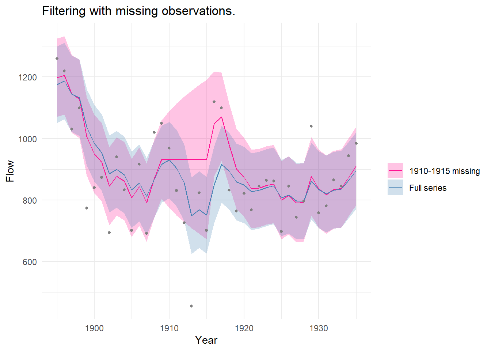
When an observation is missing there is nothing to update with: the Kalman gain is zero, so \(m_t = a_t\) and \(C_t = R_t = C_{t-1} + W\). The filtered level stays flat through the gap and the interval widens by \(W\) every year (Figure 14). As soon as observations return, the interval shrinks back.
The basic structural model adds 11 seasonal states (12 monthly effects that sum to zero) to the local linear trend:
\[ \begin{aligned} y_t &= \mu_t + s_t + v_t, & v_t \sim N(0, V) \\ \mu_t &= \mu_{t-1} + \beta_{t-1} + w_t, & w_t \sim N(0, \sigma^2_w) \\ \beta_t &= \beta_{t-1} + \gamma_t, & \gamma_t \sim N(0, \sigma^2_\gamma) \\ s_t &= -\sum_{j=1}^{S-1} s_{t-j} + \delta_t, & \delta_t \sim N(0, \sigma^2_\delta) \end{aligned} \]
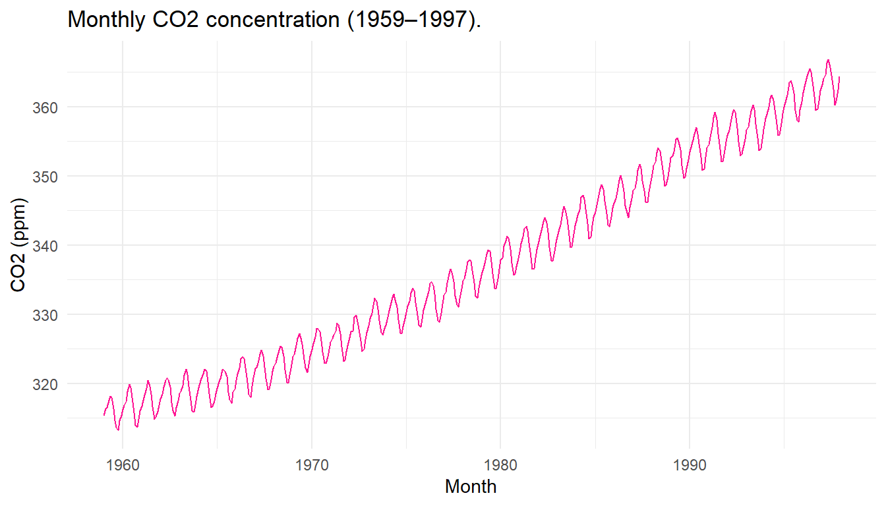
Figure 15 shows a steady upward trend and a regular yearly cycle with a constant amplitude (additive seasonality).
# Structure: 2 trend states + 11 seasonal states = 13 states:
m_s1 = dlmModPoly() + dlmModSeas(12)
dim(m_s1$GG)[1] 13 13diag(W(m_s1)) # default: level var 0, slope var 1, one seasonal var 1 [1] 0 1 1 0 0 0 0 0 0 0 0 0 0Only three states get noise: the level, the slope and the current seasonal effect. The other seasonal states are just the previous effects shifted along.
# Function to build model from log variances:
lik_s1 = function(p) {
mod = dlmModPoly() + dlmModSeas(12)
Wm = W(mod)
diag(Wm)[1:3] = exp(p[1:3]) # level, slope and seasonal variances
W(mod) = Wm
V(mod) = exp(p[4]) # observation variance
return(mod)
}
mle_s1 = dlmMLE(co2, parm = c(0, 0, 0, 0), build = lik_s1)mle_s1$convergence[1] 0var_s1 = exp(mle_s1$par)
names(var_s1) = c("level", "slope", "seasonal", "observation")
signif(var_s1, 3) level slope seasonal observation
4.68e-02 3.94e-06 2.25e-05 2.07e-02 fit_s1 = lik_s1(mle_s1$par)
filt_s1 = dlmFilter(co2, fit_s1)The slope and seasonal variances are tiny compared to the level and observation variances. The trend and the seasonal pattern change very slowly, while the level absorbs the short-term movements.


The prior is very vague (\(m_0 = 0\), \(C_0 = 10^7 I\) for all 13 states). After the first observation the filter knows that level + season ≈ 315, but it cannot tell how much of that is level and how much is the January effect. Until it has seen roughly a year of data, the seasonal effects are not identified, so the filtered level and seasonal states jump around wildly (right panel of Figure 16). After about a year the filter has learned the seasonal pattern and the level settles down.
The one-step-ahead forecasts filt_s1$f are the fitted values. After the first year they lie almost on top of the observations.
fc_s1 = dlmForecast(filt_s1, nAhead = 60)
co2_fc_df = data.frame(
month = as.numeric(tail(time(co2), 1)) + (1:60) / 12,
f = as.numeric(fc_s1$f),
lo = as.numeric(fc_s1$f) - 1.96 * sqrt(unlist(fc_s1$Q)),
hi = as.numeric(fc_s1$f) + 1.96 * sqrt(unlist(fc_s1$Q))
)
The forecasts in Figure 17 continue the upward trend and repeat the seasonal pattern, with intervals that widen over the five years. This can be explained by the uncertainty about the level and slope accumulating.
Instead of 11 seasonal states, the seasonal pattern can be built from sine and cosine waves (harmonics). The \(j\)th harmonic has frequency \(\omega_j = 2\pi j / s\) and needs two states. With \(q\) harmonics there are \(2q\) seasonal states, so \(q = 1\) gives a pure sine-shaped season with only 2 states. This links directly to the harmonics in Spectral Analysis in Section 1.
# Check the structure for q = 1:
m_trig = dlmModPoly() + dlmModTrig(s = 12, q = 1)
m_trig$GG [,1] [,2] [,3] [,4]
[1,] 1 1 0.0000000 0.0000000
[2,] 0 1 0.0000000 0.0000000
[3,] 0 0 0.8660254 0.5000000
[4,] 0 0 -0.5000000 0.8660254The \(2 \times 2\) block in GG rotates the harmonic by \(\omega_1 = 2\pi/12\) each month (\(\cos(\pi/6) = 0.866\), \(\sin(\pi/6) = 0.5\)).
# Function to build model with q harmonics (seasonal states share one variance):
build_trig = function(q) {
function(p) {
mod = dlmModPoly() + dlmModTrig(s = 12, q = q)
k = nrow(mod$GG)
Wm = W(mod)
diag(Wm) = c(exp(p[1]), exp(p[2]), rep(exp(p[3]), k - 2))
W(mod) = Wm
V(mod) = exp(p[4])
return(mod)
}
}
# Fit q = 1, 2, 3:
fits_trig = lapply(1:3, function(q) dlmMLE(co2, parm = c(0, 0, 0, 0), build = build_trig(q)))trig_tab = data.frame(
Model = c("dlmModSeas (11 seasonal states)", paste0("Trigonometric, q = ", 1:3)),
Seasonal_states = c(11, 2 * (1:3)),
neg_loglik = c(mle_s1$value, sapply(fits_trig, function(f) f$value))
)
trig_tab$AIC = 2 * trig_tab$neg_loglik + 2 * 4 # 4 variance parameters in each model
kable(trig_tab, digits = 1, row.names = FALSE)| Model | Seasonal_states | neg_loglik | AIC |
|---|---|---|---|
| dlmModSeas (11 seasonal states) | 11 | -204.3 | -400.5 |
| Trigonometric, q = 1 | 2 | 64.5 | 136.9 |
| Trigonometric, q = 2 | 4 | -253.1 | -498.1 |
| Trigonometric, q = 3 | 6 | -252.1 | -496.1 |

The CO\(_2\) seasonal cycle is not a perfect sine wave: concentrations rise slowly over the northern winter and fall quickly during the growing season. One harmonic forces a symmetric shape, while the second harmonic lets the peak and trough be asymmetric (Figure 18). The table shows by how much the likelihood improves when harmonics are added. Every model has the same four variance parameters, so the AIC comparison here is effectively a likelihood comparison (with the same caveat about diffuse initial states as before).
Setting the seasonal variance to zero makes the seasonal pattern constant over time (the harmonics still rotate, but their amplitudes no longer change).
build_trig_const = function(q) {
function(p) {
mod = dlmModPoly() + dlmModTrig(s = 12, q = q)
k = nrow(mod$GG)
Wm = W(mod)
diag(Wm) = c(exp(p[1]), exp(p[2]), rep(0, k - 2)) # no noise in the seasonal states
W(mod) = Wm
V(mod) = exp(p[3])
return(mod)
}
}
fit_const = dlmMLE(co2, parm = c(0, 0, 0), build = build_trig_const(2))
c(neg_loglik_constant = fit_const$value, neg_loglik_changing = fits_trig[[2]]$value)neg_loglik_constant neg_loglik_changing
-231.4977 -253.0683 If the level and slope variances are also zero, every state is deterministic and the model becomes a linear regression with a linear trend and harmonic terms:
\[ y_t = \beta_0 + \beta_1 t + \sum_{j=1}^{2}\left[a_j \cos(\omega_j t) + b_j \sin(\omega_j t)\right] + v_t. \]
tt = 1:length(co2)
# Harmonic regression:
lm_harm = lm(co2 ~ tt + sin(2 * pi * tt / 12) + cos(2 * pi * tt / 12) +
sin(4 * pi * tt / 12) + cos(4 * pi * tt / 12))
# Same model as a DLM with all state variances = 0:
mod_det = dlmModPoly(order = 2, dV = 1, dW = c(0, 0)) + dlmModTrig(s = 12, q = 2, dV = 0, dW = 0)
filt_det = dlmFilter(co2, mod_det)
m_T = filt_det$m[length(co2) + 1, ]
kable(data.frame(
Quantity = c("Slope", "Fitted value at the last month"),
lm = c(coef(lm_harm)["tt"], fitted(lm_harm)[length(co2)]),
dlm = c(m_T[2], sum(mod_det$FF * m_T)),
row.names = NULL
), digits = 5, row.names = FALSE)| Quantity | lm | dlm |
|---|---|---|
| Slope | 0.10921 | 0.10921 |
| Fitted value at the last month | 361.59873 | 361.59873 |
The Kalman filter with a vague prior and no state noise gives the same slope and the same fitted value as lm(): the filter is just computing least squares recursively.
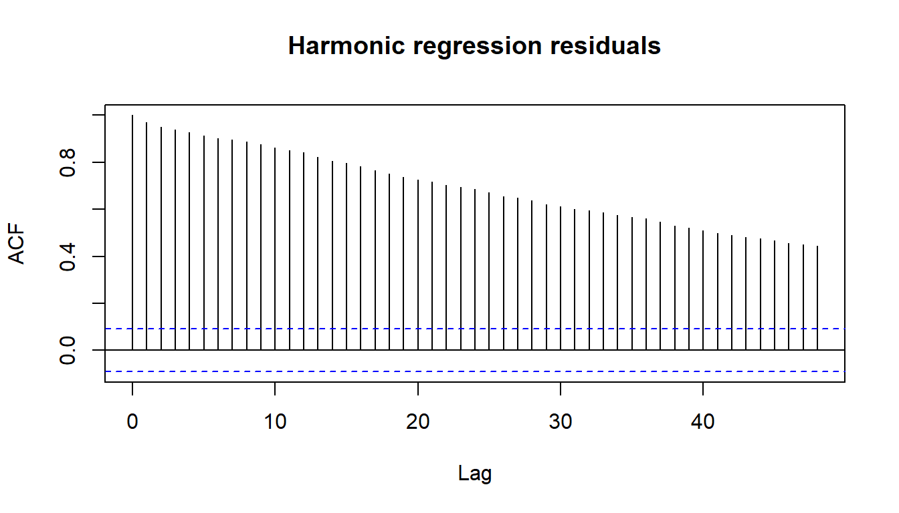
The residuals of the harmonic regression are strongly autocorrelated (Figure 19): a straight line and a fixed seasonal pattern do not describe 39 years of CO\(_2\) well. This is the main argument for the dynamic (state-space) version, where the level, slope and seasonal pattern can drift.
The function below implements the three steps for a univariate observation and a state of any dimension. \(F_t\) and \(G_t\) can be given either as fixed matrices or as functions of \(t\) (for time-varying models), and missing values (NA) are handled by skipping the update. The output is stored the same way as in dlmFilter(): row 1 of m (and element 1 of C) is the prior at time 0.
# Function to code the Kalman filter from first principles:
kalman_filter = function(y, FF, GG, V, W, m0, C0) {
n = length(y)
p = length(m0)
# Define F_t and G_t:
get_F = if (is.function(FF)) FF else function(t) FF
get_G = if (is.function(GG)) GG else function(t) GG
a = matrix(NA, n, p) # prior means
R = vector("list", n)
m = matrix(NA, n + 1, p) # posterior means
C = vector("list", n + 1)
f = Q = e = rep(NA, n) # forecasts
m[1, ] = m0
C[[1]] = as.matrix(C0)
loglik = 0
for (t in 1:n) {
Ft = matrix(get_F(t), nrow = 1)
Gt = as.matrix(get_G(t))
# 1. Predict the state:
a[t, ] = Gt %*% m[t, ]
R[[t]] = Gt %*% C[[t]] %*% t(Gt) + W
# 2. Predict the observation:
f[t] = drop(Ft %*% a[t, ])
Q[t] = drop(Ft %*% R[[t]] %*% t(Ft)) + V
# 3. Update with y_t:
if (is.na(y[t])) {
# No observation = no update
m[t + 1, ] = a[t, ]
C[[t + 1]] = R[[t]]
} else {
e[t] = y[t] - f[t] # one-step-ahead prediction error
K = R[[t]] %*% t(Ft) / Q[t] # Kalman gain
m[t + 1, ] = a[t, ] + drop(K) * e[t]
C[[t + 1]] = R[[t]] - K %*% Ft %*% R[[t]]
loglik = loglik + dnorm(y[t], f[t], sqrt(Q[t]), log = TRUE)
}
}
list(m = m, C = C, a = a, R = R, f = f, Q = Q, e = e, loglik = loglik)
}# Function to code the Kalman smoother from first principles:
kalman_smoother = function(kf, GG) {
n = nrow(kf$a)
p = ncol(kf$a)
get_G = if (is.function(GG)) GG else function(t) GG
s = matrix(NA, n + 1, p) # smoothed means
S = vector("list", n + 1)
# At last time point smoothed:
s[n + 1, ] = kf$m[n + 1, ]
S[[n + 1]] = kf$C[[n + 1]]
# Backwards recursion:
for (t in n:1) {
Gt = as.matrix(get_G(t))
J = kf$C[[t]] %*% t(Gt) %*% solve(kf$R[[t]]) # smoother gain
s[t, ] = kf$m[t, ] + J %*% (s[t + 1, ] - kf$a[t, ])
S[[t]] = kf$C[[t]] + J %*% (S[[t + 1]] - kf$R[[t]]) %*% t(J)
}
list(s = s, S = S)
}\(G_t\) is used in the prediction step for \(\theta_t\) (moving from \(t-1\) to \(t\)), and \(F_t\) is used to predict \(y_t\) from \(\theta_t\). Using \(G_{t-1}\) or \(F_{t-1}\) by mistake is easy and gives wrong results that still look reasonable. The extra row for time 0 in m is another place where off-by-one errors happen.
dlm: the Nile dataI maximise my log-likelihood over \(\log V\) and \(\log W\) with optim(), using the same vague prior as dlmModPoly() (\(m_0 = 0\), \(C_0 = 10^7\)).
# Function to calculate negative log-likelihood of local level model:
nile_nll = function(par) {
-kalman_filter(Nile, FF = 1, GG = 1, V = exp(par[1]), W = exp(par[2]),
m0 = 0, C0 = 1e7)$loglik
}
fit_own_nile = optim(par = c(log(10000), log(1000)), fn = nile_nll,
method = "BFGS", hessian = TRUE)
V_own = exp(fit_own_nile$par[1])
W_own = exp(fit_own_nile$par[2])
# 95% CIs from Hessian:
se_own = sqrt(diag(solve(fit_own_nile$hessian)))
kable(data.frame(
Parameter = c("V", "W"),
`My filter + optim()` = c(V_own, W_own),
Lower = exp(fit_own_nile$par - 1.96 * se_own),
Upper = exp(fit_own_nile$par + 1.96 * se_own),
`dlmMLE()` = var_nile,
check.names = FALSE
), digits = 1, row.names = FALSE)| Parameter | My filter + optim() | Lower | Upper | dlmMLE() |
|---|---|---|---|---|
| V | 15100.0 | 10037.6 | 22715.6 | 15099.8 |
| W | 1468.4 | 265.9 | 8108.2 | 1468.4 |
My filter and dlmMLE() give the same estimates (\(\hat{V} \approx 1.51\times 10^{4}\), \(\hat{W} \approx 1468\)), which are also the values reported for the Nile local level model by Durbin and Koopman (2012).
# Own filter and smoother at own estimates:
kf_nile = kalman_filter(Nile, FF = 1, GG = 1, V = V_own, W = W_own, m0 = 0, C0 = 1e7)
ks_nile = kalman_smoother(kf_nile, GG = 1)
# dlm with the same parameters:
mod_check = dlmModPoly(order = 1, dV = V_own, dW = W_own)
filt_check = dlmFilter(Nile, mod_check)
smooth_check = dlmSmooth(filt_check)
# Forecasts: append 10 NAs to series and run own filter again:
kf_fc = kalman_filter(c(Nile, rep(NA, 10)), FF = 1, GG = 1, V = V_own, W = W_own,
m0 = 0, C0 = 1e7)
fc_check = dlmForecast(filt_check, nAhead = 10)
# Missing values (1910-1915 removed, as above):
kf_na = kalman_filter(nile_na, FF = 1, GG = 1, V = V_own, W = W_own, m0 = 0, C0 = 1e7)
filt_na_check = dlmFilter(nile_na, mod_check)
diffs = c(
max(abs(kf_nile$m[, 1] - as.numeric(filt_check$m))),
max(abs(unlist(kf_nile$C) - unlist(dlmSvd2var(filt_check$U.C, filt_check$D.C)))),
max(abs(ks_nile$s[, 1] - as.numeric(smooth_check$s))),
max(abs(unlist(ks_nile$S) - unlist(dlmSvd2var(smooth_check$U.S, smooth_check$D.S)))),
max(abs(kf_fc$f[101:110] - as.numeric(fc_check$f))),
max(abs(kf_fc$Q[101:110] - unlist(fc_check$Q))),
max(abs(kf_na$m[, 1] - as.numeric(filt_na_check$m))))
kable(data.frame(
Check = c("Filtered means $m_t$",
"Filtered variances $C_t$",
"Smoothed means $s_t$",
"Smoothed variances $S_t$",
"Forecasts $f_{T+h}$, $h = 1, \\dots, 10$",
"Forecast variances $Q_{T+h}$, $h = 1, \\dots, 10$",
"Filtered means $m_t$ with missing values"),
`Largest absolute difference` = formatC(diffs, format = "e", digits = 2),
check.names = FALSE
), row.names = FALSE, escape = FALSE, align = "lr")| Check | Largest absolute difference |
|---|---|
| Filtered means \(m_t\) | 4.55e-13 |
| Filtered variances \(C_t\) | 1.86e-09 |
| Smoothed means \(s_t\) | 4.55e-13 |
| Smoothed variances \(S_t\) | 1.86e-09 |
| Forecasts \(f_{T+h}\), \(h = 1, \dots, 10\) | 0.00e+00 |
| Forecast variances \(Q_{T+h}\), \(h = 1, \dots, 10\) | 3.64e-12 |
| Filtered means \(m_t\) with missing values | 4.55e-13 |
# dlmLL() returns -log L without the constant -(n/2) log(2*pi):
ll_dlm = -dlmLL(Nile, mod_check)
kable(data.frame(
Quantity = c("$\\log L$ (own filter)",
"$-\\texttt{dlmLL()}$",
"Difference",
"$-\\frac{n}{2}\\log(2\\pi)$"),
Value = c(kf_nile$loglik, ll_dlm, kf_nile$loglik - ll_dlm,
-length(Nile) / 2 * log(2 * pi))
), digits = 4, row.names = FALSE, escape = FALSE)| Quantity | Value |
|---|---|
| \(\log L\) (own filter) | -641.5856 |
| \(-\texttt{dlmLL()}\) | -549.6918 |
| Difference | -91.8939 |
| \(-\frac{n}{2}\log(2\pi)\) | -91.8939 |
All differences in Table 4 are at the level of floating-point rounding error, so my filter and smoother reproduce dlmFilter(), dlmSmooth() and dlmForecast() to numerical precision, including the filtered means with missing values and the forecasts obtained by appending NAs. The two log-likelihoods in Table 5 differ only by the constant \(-\frac{n}{2}\log(2\pi)\), which does not depend on the parameters, so both are maximised at the same values of \(V\) and \(W\).
The local level checks are all scalar, so they cannot detect matrix mistakes such as using \(G_t' C_{t-1} G_t\) instead of \(G_t C_{t-1} G_t'\). I therefore repeated the check for the local linear trend model, where \(\theta_t = (\mu_t, \beta_t)'\) and \(G = \begin{pmatrix} 1 & 1 \\ 0 & 1 \end{pmatrix}\) is not symmetric, using the variances estimated earlier:
G_llt = matrix(c(1, 0, 1, 1), 2, 2) # [1 1; 0 1]
kf_llt = kalman_filter(Nile, FF = c(1, 0), GG = G_llt,
V = var_llt["V"], W = diag(var_llt[c("W_level", "W_slope")]),
m0 = c(0, 0), C0 = diag(1e7, 2))
filt_llt = dlmFilter(Nile, build_llt(fit_llt$par))
# Largest difference between own and dlm filtered states:
diff_llt = max(abs(kf_llt$m - filt_llt$m))
diff_llt[1] 2.285105e-11The largest difference in the filtered states is 2.3e-11, so the matrix version of the filter also matches dlmFilter().
Question: how is simple exponential smoothing related to the Kalman filter for the local level model?
For the local level model (\(F = G = 1\)), the update step is
\[ m_t = m_{t-1} + K_t(y_t - m_{t-1}), \]
which is exactly the error-correction form of SES, \(\ell_t = \ell_{t-1} + \alpha(y_t - \ell_{t-1})\), with a time-varying \(\alpha = K_t\). The recursions for \(R_t\), \(C_t\) and \(K_t\) do not involve \(y_t\), so \(K_t\) is a fixed sequence that can be computed before seeing any data, and for the local level model it converges to a steady state. Setting \(C_t = C_{t-1} = C\) in \(R_t = C_{t-1} + W\), \(K_t = R_t/(R_t + V)\) and \(C_t = (1 - K_t)R_t\) and solving gives
\[ K_\infty = \frac{-q + \sqrt{q^2 + 4q}}{2}, \qquad q = \frac{W}{V} \ (\text{the signal-to-noise ratio}). \]
\(K_\infty\) increases from 0 to 1 as \(q\) increases. So, after a few observations, the Kalman filter for the local level model is SES with \(\alpha = K_\infty\). The local level model also implies an ARIMA(0,1,1) for \(y_t\) (with \(\theta = K_\infty - 1 \in (-1, 0)\)), and the ARIMA(0,1,1) forecast is SES with \(\alpha = 1 + \theta\). Table 6 compares the steady-state gain with the gain from my filter, the ARIMA(0,1,1) estimate and the ses() estimate for the Nile data:
q_nile = W_own / V_own
K_inf = (-q_nile + sqrt(q_nile^2 + 4 * q_nile)) / 2
# Kalman gain at each time point from own filter (F = 1, so K_t = R_t / Q_t):
K_t = unlist(kf_nile$R) / kf_nile$Q
# SES and ARIMA(0,1,1) fitted to the same data:
ses_nile = ses(Nile)
arima_nile = Arima(Nile, order = c(0, 1, 1))
kable(data.frame(
Quantity = c("Steady-state Kalman gain $K_\\infty$ (from $\\hat{V}$ and $\\hat{W}$)",
"Kalman gain $K_{100}$ from my filter",
"$1 + \\hat{\\theta}$ from ARIMA(0,1,1)",
"$\\hat{\\alpha}$ from `ses()`"),
Value = c(K_inf, K_t[100], 1 + coef(arima_nile)["ma1"], ses_nile$model$par["alpha"])
), digits = 4, row.names = FALSE, escape = FALSE)| Quantity | Value |
|---|---|
| Steady-state Kalman gain \(K_\infty\) (from \(\hat{V}\) and \(\hat{W}\)) | 0.2670 |
| Kalman gain \(K_{100}\) from my filter | 0.2670 |
| \(1 + \hat{\theta}\) from ARIMA(0,1,1) | 0.2671 |
\(\hat{\alpha}\) from ses() |
0.2457 |

ses().The Kalman gain starts close to 1 (the vague prior means the first observation gets almost all the weight) and settles at \(K_\infty \approx 0.267\) within about ten years (Figure 20). \(1 + \hat{\theta} = 0.267\) from the ARIMA(0,1,1) is almost identical, because the local level model is an ARIMA(0,1,1) with \(\theta\) restricted to \((-1, 0)\), and both are fitted by maximum likelihood. The SES estimate is close but smaller (\(\hat{\alpha} = 0.246\)). The difference comes from how the parameters are estimated: ses() fits the single-source-of-error model ETS(A,N,N) and estimates \(\ell_0\) as a parameter, while the local level model has two independent errors and a vague prior on the initial level. With the same \(\alpha\) the three approaches would give identical forecasts once the filter has reached its steady state. With the estimated values the forecasts differ only slightly.
This gives the smoothing parameter \(\alpha\) a clear meaning: it is determined by the signal-to-noise ratio \(q = W/V\). A noisy series with a slowly moving level (small \(q\), like the Nile) gives a small \(\alpha\), so the forecast averages over many years. A series whose level moves a lot compared to the noise (like the oil data in Question 2) gives \(\alpha\) close to 1, so the forecast is essentially the last observation.
\[ \begin{aligned} y_t &= F_t\theta_t + v_t, \qquad v_t \sim N(0, V = 2) \\ \theta_t &= G_t\theta_{t-1} + w_t, \qquad w_t \sim N(0, W = 1) \\ \theta_0 &\sim N(0, 1) \end{aligned} \]
with \(G_t = \frac{1}{2}\sin\left(\frac{\pi}{2}[2t+1]\right) = \frac{(-1)^t}{2}\) (since \(\sin(\pi t + \pi/2) = \cos(\pi t) = (-1)^t\)), and \(F_t \sim N(1, 0.2^2)\) rounded to one decimal, playing the role of an explanatory variable.
Because \(G_t\) alternates in sign, half of the previous state carries over with a flipped sign every step. This creates the cyclical (zig-zag) behaviour in \(\theta_t\).
set.seed(42)
n_kf = 100
h_kf = 5
N_kf = n_kf + h_kf
V_true = 2
W_true = 1
# Time-varying system matrices (F_t also needed for forecast period):
FF_t = round(rnorm(N_kf, 1, 0.2), 1)
GG_t = (-1)^(1:N_kf) / 2
# Simulate the states and observations:
theta_kf = numeric(N_kf)
y_kf = numeric(N_kf)
theta_prev = rnorm(1, 0, 1) # theta_0
for (t in 1:N_kf) {
theta_kf[t] = GG_t[t] * theta_prev + rnorm(1, 0, sqrt(W_true)) # state equation
y_kf[t] = FF_t[t] * theta_kf[t] + rnorm(1, 0, sqrt(V_true)) # observation equation
theta_prev = theta_kf[t]
}
# Observed series (last 5 values held out to check forecasts):
y_obs = c(y_kf[1:n_kf], rep(NA, h_kf))I use my kalman_filter() from above, with \(F_t\) and \(G_t\) passed as functions of \(t\). The likelihood is maximised over \(\log V\) and \(\log W\). The 5 NAs at the end do not contribute to the likelihood.
# Function to calculate negative log-likelihood from log variances:
negll = function(parm, y, FF, GG) {
-kalman_filter(y, FF = function(t) FF[t], GG = function(t) GG[t],
V = exp(parm[1]), W = exp(parm[2]), m0 = 0, C0 = 1)$loglik
}
fit_kf = optim(par = c(0, 0), fn = negll, y = y_obs, FF = FF_t, GG = GG_t,
method = "BFGS", hessian = TRUE)
se_kf = sqrt(diag(solve(fit_kf$hessian)))
kable(data.frame(
Parameter = c("V", "W"),
True = c(V_true, W_true),
Estimate = exp(fit_kf$par),
Lower = exp(fit_kf$par - 1.96 * se_kf),
Upper = exp(fit_kf$par + 1.96 * se_kf)
), digits = 3, row.names = FALSE)| Parameter | True | Estimate | Lower | Upper |
|---|---|---|---|---|
| V | 2 | 2.105 | 1.334 | 3.321 |
| W | 1 | 0.459 | 0.111 | 1.902 |
V_hat = exp(fit_kf$par[1])
W_hat = exp(fit_kf$par[2])
kf_out = kalman_filter(y_obs, FF = function(t) FF_t[t], GG = function(t) GG_t[t],
V = V_hat, W = W_hat, m0 = 0, C0 = 1)
# Filtered states and variances (without time-0 row):
m_kf = kf_out$m[-1, 1]
C_kf = unlist(kf_out$C[-1])Both true values lie inside their 95% intervals (\(\hat{V} = 2.1\) and \(\hat{W} = 0.46\)), but the intervals are wide, especially for \(W\), whose upper limit is more than ten times its lower limit. The two variances are not easy to separate. Since \(|G_t| = 1/2\), the state forgets its past quickly, so \(\theta_t\) is close to white noise and \(y_t\) looks like noise with variance \(F_t^2\,\text{Var}(\theta_t) + V\). The changing \(F_t\) helps a little, because it scales the state part but not the observation noise, but the confidence intervals are still wide.
Check against dlm. dlm allows time-varying matrices through JFF, JGG and X: the entries of JFF/JGG say which column of X holds the value at each time.
mod_tv = dlm(FF = matrix(1), V = matrix(V_hat), GG = matrix(1), W = matrix(W_hat),
m0 = 0, C0 = matrix(1),
JFF = matrix(1), JGG = matrix(2), X = cbind(FF_t, GG_t))
filt_tv = dlmFilter(y_obs, mod_tv)
# Largest difference between own and dlm filtered states:
max(abs(as.numeric(dropFirst(filt_tv$m)) - m_kf))[1] 3.885781e-16My Kalman filter gives the same filtered states as dlmFilter(), including the 5 missing values at the end.
Adding NAs to the end of \(y\) makes the filter skip the update step, so \(m_t = a_t\), \(C_t = R_t\), and \(f_t, Q_t\) are the forecasts and their variances.
fc_idx = (n_kf + 1):N_kf
kable(data.frame(
h = 1:h_kf,
Forecast = kf_out$f[fc_idx],
Lower = kf_out$f[fc_idx] - 1.96 * sqrt(kf_out$Q[fc_idx]),
Upper = kf_out$f[fc_idx] + 1.96 * sqrt(kf_out$Q[fc_idx]),
True_y = y_kf[fc_idx]
), digits = 2, escape = FALSE,
col.names = c("$h$", "Forecast", "Lower", "Upper", "True $y_{100+h}$"))| \(h\) | Forecast | Lower | Upper | True \(y_{100+h}\) |
|---|---|---|---|---|
| 1 | -0.02 | -3.37 | 3.33 | 2.07 |
| 2 | -0.01 | -3.39 | 3.37 | -1.21 |
| 3 | 0.00 | -3.09 | 3.10 | -0.74 |
| 4 | 0.00 | -3.56 | 3.57 | -2.05 |
| 5 | 0.00 | -3.16 | 3.16 | 0.31 |
The forecasts shrink towards zero almost immediately: after one step only half of the last state survives (with a sign flip), after two steps a quarter, and so on. The prediction intervals quickly reach their long-run width, \(\pm 1.96\sqrt{F_t^2 \text{Var}(\theta) + V}\) with \(\text{Var}(\theta) = W/(1 - 1/4)\).
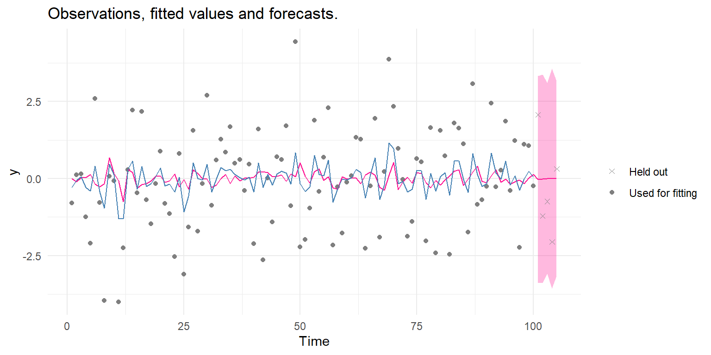
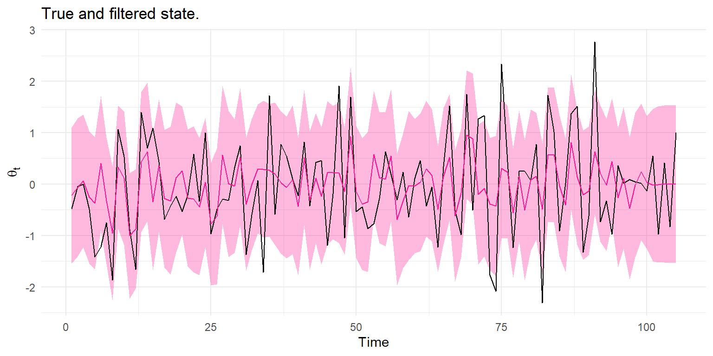
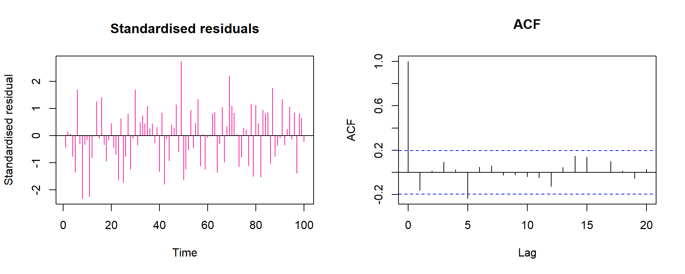
lb_kf = Box.test(std_res, lag = 10, type = "Ljung-Box", fitdf = 2)
lb_kf
Box-Ljung test
data: std_res
X-squared = 10.646, df = 8, p-value = 0.2226The standardised prediction errors \(e_t/\sqrt{Q_t}\) should be independent \(N(0,1)\) if the model is correct, which it is here (we simulated from it). The ACF (Figure 22) and the Ljung–Box test (\(p = 0.223\)) are consistent with this.
Discussion. The filtered state follows the zig-zag pattern of the true state, but with wide intervals: with \(V = 2\) and a state variance of only about \(1.33\), a single observation carries limited information about \(\theta_t\) (Figure 21). The filter gives the most weight to the observation when \(F_t\) is large, because then the state part of \(y_t\) is larger relative to the noise.
\[ x_t = -0.9x_{t-2} + w_t, \qquad y_t = x_t + v_t. \]
Let \(\theta_t = (x_t, x_{t-1})'\). Then
\[ \theta_t = \begin{pmatrix} x_t \\ x_{t-1} \end{pmatrix} = \underbrace{\begin{pmatrix} 0 & -0.9 \\ 1 & 0 \end{pmatrix}}_{G} \begin{pmatrix} x_{t-1} \\ x_{t-2} \end{pmatrix} + \begin{pmatrix} w_t \\ 0 \end{pmatrix}, \qquad W = \begin{pmatrix} \sigma^2_w & 0 \\ 0 & 0 \end{pmatrix}, \]
\[ y_t = \underbrace{\begin{pmatrix} 1 & 0 \end{pmatrix}}_{F}\theta_t + v_t, \qquad V = \sigma^2_v, \qquad \theta_0 = (x_0, x_{-1})'. \]
\(x_t\) only depends on \(x_{t-2}\), so the even and odd time points form two independent AR(1) processes (in steps of two) with coefficient \(-0.9\). For \(x_t\) (and hence \(y_t\)) to be stationary from the start, \(x_0\) and \(x_{-1}\) must come from the stationary distribution:
\[ \sigma^2_0 = \sigma^2_1 = \frac{\sigma^2_w}{1 - 0.9^2} = \frac{\sigma^2_w}{0.19}, \]
and \(x_0\) and \(x_{-1}\) are uncorrelated, since \(\text{Cov}(x_t, x_{t-1}) = 0\) for this process. With \(\sigma_w = 1\) this gives \(\sigma^2_0 = \sigma^2_1 = 5.263\). Then \(\text{Var}(y_t) = \sigma^2_w/0.19 + \sigma^2_v\) for every \(t\).
# Simulate x and y:
sim_q2 = function(n, sigma_w, sigma_v) {
s2_0 = sigma_w^2 / (1 - 0.9^2) # stationary variance
x_all = numeric(n + 2)
x_all[1:2] = rnorm(2, 0, sqrt(s2_0)) # x_{-1}, x_0
for (t in 3:(n + 2)) {
x_all[t] = -0.9 * x_all[t - 2] + rnorm(1, 0, sigma_w)
}
x = x_all[-(1:2)]
y = x + rnorm(n, 0, sigma_v) # observation noise
return(list(x = ts(x), y = ts(y)))
}
# Same seed so both cases share the same x:
set.seed(8)
q2_v1 = sim_q2(100, sigma_w = 1, sigma_v = 1)
set.seed(8)
q2_v10 = sim_q2(100, sigma_w = 1, sigma_v = 10)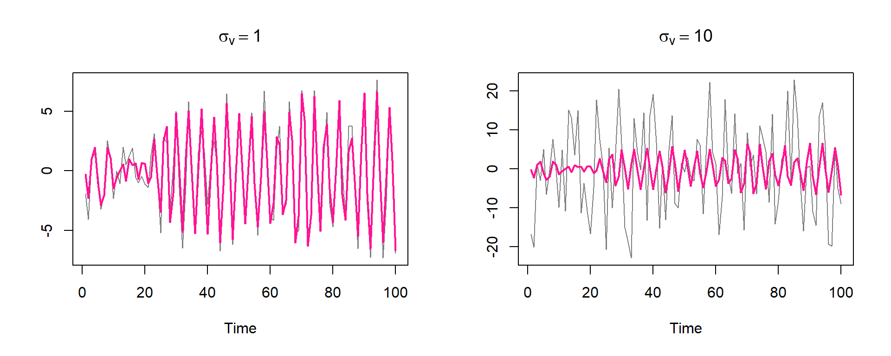
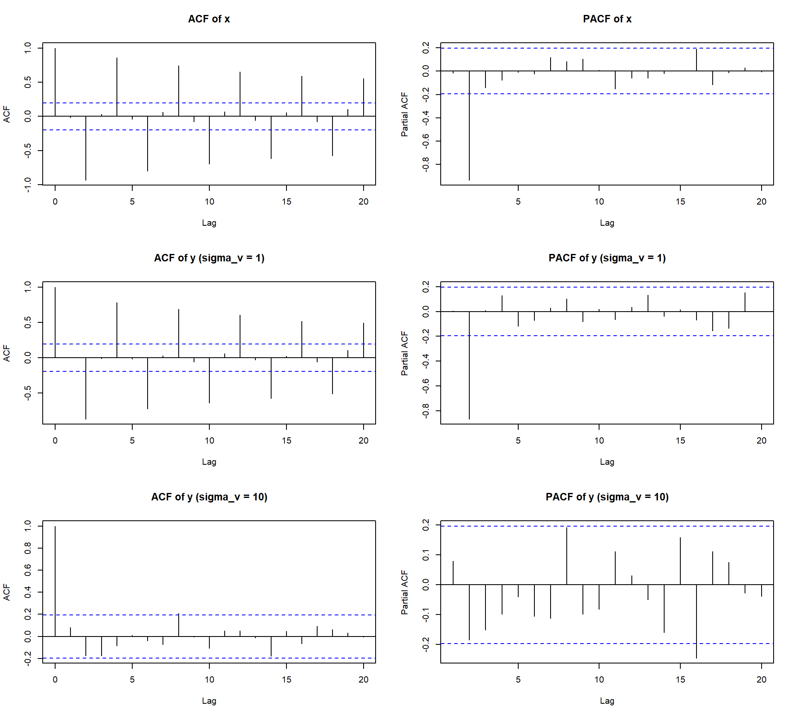
# Theoretical ACF of x:
round(ARMAacf(ar = c(0, -0.9), lag.max = 8), 3) 0 1 2 3 4 5 6 7 8
1.000 0.000 -0.900 0.000 0.810 0.000 -0.729 0.000 0.656 # Factor by which observation noise shrinks autocorrelations of y:
var_x = 1 / 0.19
c(sigma_v_1 = var_x / (var_x + 1), sigma_v_10 = var_x / (var_x + 100)) sigma_v_1 sigma_v_10
0.8403361 0.0500000 This is exactly the situation where a state-space model helps: we model \(x\) directly and treat \(v\) as measurement error. As an extra check I ran my Kalman filter and smoother with the true parameters to recover \(x\) from \(y\):
G_q2 = matrix(c(0, 1, -0.9, 0), 2, 2) # [0 -0.9; 1 0]
# Function to compute smoothed estimate of x_t (first state) with own filter and smoother:
smooth_x = function(y, sigma_v) {
kf = kalman_filter(as.numeric(y), FF = c(1, 0), GG = G_q2, V = sigma_v^2,
W = diag(c(1, 0)), m0 = c(0, 0), C0 = diag(1 / 0.19, 2))
kalman_smoother(kf, GG = G_q2)$s[-1, 1]
}
x_hat_v1 = smooth_x(q2_v1$y, sigma_v = 1)
x_hat_v10 = smooth_x(q2_v10$y, sigma_v = 10)
# Correlation between true x and its smoothed estimate:
c(sigma_v_1 = cor(q2_v1$x, x_hat_v1), sigma_v_10 = cor(q2_v10$x, x_hat_v10)) sigma_v_1 sigma_v_10
0.9790651 0.8772303 With \(\sigma_v = 1\) the smoothed estimate of \(x\) is very close to the truth (correlation 0.98). With \(\sigma_v = 10\) the correlation drops to 0.88, which is still surprisingly high given that the ACF and PACF of \(y\) looked like white noise. The smoother can recover so much because it is given the true model. It knows that \(x\) follows a strong cycle with period 4, so it can average over many noisy observations that carry information about the same cycle. In practice the parameters would have to be estimated, and with this much noise that would be challenging
The linear growth model is
\[ Y_t = \mu_t + v_t, \qquad \mu_t = \mu_{t-1} + \beta_{t-1} + w_t, \qquad \beta_t = \beta_{t-1} + \gamma_t, \]
with \(v_t\), \(w_t\), \(\gamma_t\) independent white noise with variances \(\sigma^2_v, \sigma^2_w, \sigma^2_\gamma\).
First difference of the level: \(\Delta\mu_t = \mu_t - \mu_{t-1} = \beta_{t-1} + w_t\).
Second difference of the level: \(\Delta^2\mu_t = (\beta_{t-1} - \beta_{t-2}) + (w_t - w_{t-1}) = \gamma_{t-1} + w_t - w_{t-1}\).
Second difference of the noise: \(\Delta^2 v_t = v_t - 2v_{t-1} + v_{t-2}\).
So
\[ Z_t = \Delta^2 Y_t = \gamma_{t-1} + w_t - w_{t-1} + v_t - 2v_{t-1} + v_{t-2}. \]
\(Z_t\) is a finite linear combination of white noise terms at lags 0, 1 and 2, so its mean (0) and autocovariances do not depend on \(t\) (it is stationary). Using the independence of all the noise terms, the autocovariances are
\[ \begin{aligned} \gamma_Z(0) &= \sigma^2_\gamma + 2\sigma^2_w + (1 + 4 + 1)\sigma^2_v = \sigma^2_\gamma + 2\sigma^2_w + 6\sigma^2_v \\ \gamma_Z(1) &= \text{Cov}(Z_t, Z_{t-1}) = -\sigma^2_w + (-2)(1)\sigma^2_v + (1)(-2)\sigma^2_v = -\sigma^2_w - 4\sigma^2_v \\ \gamma_Z(2) &= \text{Cov}(Z_t, Z_{t-2}) = (1)(1)\sigma^2_v = \sigma^2_v \\ \gamma_Z(k) &= 0, \quad k \geq 3 \end{aligned} \]
An autocovariance function that is non-zero up to lag 2 and zero afterwards is exactly the ACF of an MA(2) process. (Any stationary process whose autocovariances cut off after lag \(q\) can be written as an MA(\(q\)).) So the linear growth model is an ARIMA(0,2,2) model.
Simulation check:
set.seed(9)
n_lg = 10000
sig_v = 1
sig_w = 0.5
sig_g = 0.2
# Simulate the linear growth model:
beta_lg = cumsum(rnorm(n_lg, 0, sig_g))
mu_lg = numeric(n_lg)
for (t in 2:n_lg) mu_lg[t] = mu_lg[t - 1] + beta_lg[t - 1] + rnorm(1, 0, sig_w)
y_lg = mu_lg + rnorm(n_lg, 0, sig_v)
# Second differences:
z_lg = diff(y_lg, differences = 2)
# Theoretical ACF:
g0 = sig_g^2 + 2 * sig_w^2 + 6 * sig_v^2
rho_theory = c(1, (-sig_w^2 - 4 * sig_v^2) / g0, sig_v^2 / g0, 0, 0)
# Sample ACF and ACF of fitted MA(2):
ma2 = arima(z_lg, order = c(0, 0, 2), include.mean = FALSE)
kable(data.frame(
Lag = 0:4,
Theory = rho_theory,
Sample = as.numeric(acf(z_lg, lag.max = 4, plot = FALSE)$acf),
Fitted_MA2 = as.numeric(ARMAacf(ma = coef(ma2), lag.max = 4))
), digits = 3, col.names = c("Lag", "Theory", "Sample", "Fitted MA(2)"))| Lag | Theory | Sample | Fitted MA(2) |
|---|---|---|---|
| 0 | 1.000 | 1.000 | 1.000 |
| 1 | -0.650 | -0.643 | -0.648 |
| 2 | 0.153 | 0.139 | 0.151 |
| 3 | 0.000 | 0.008 | 0.000 |
| 4 | 0.000 | 0.002 | 0.000 |
The sample ACF of the second differences matches the theoretical values, and is zero beyond lag 2. A fitted MA(2) reproduces the same ACF.
The tutorial uses usconsumption from the (older) fpp package. The same quarterly growth rates for US personal consumption and disposable income are in uschange in fpp2 (with more recent data, 1970–2016), so I used those.
# Read in data:
data(uschange)
# View(uschange)
y_us = uschange[, "Consumption"]
z_us = uschange[, "Income"]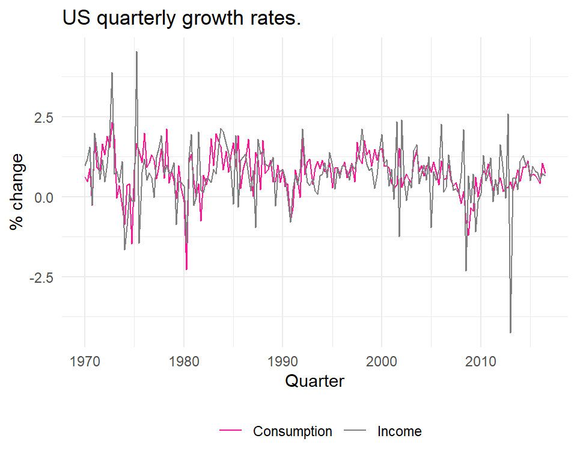
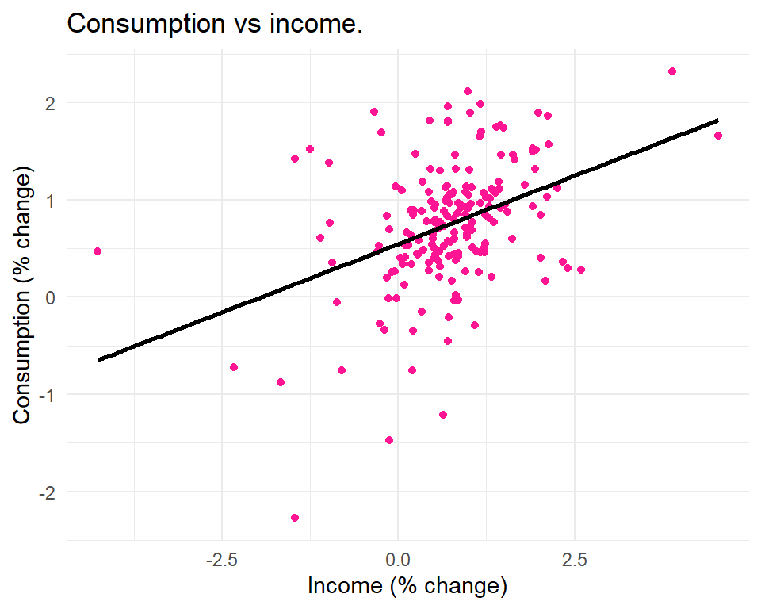
Figure 25 shows that consumption and income growth move together, but income growth is much more volatile, and the scatter plot shows a positive but noisy relationship.
# Ordinary least squares:
lm_us = lm(y_us ~ z_us)
summary(lm_us)$coefficients Estimate Std. Error t value Pr(>|t|)
(Intercept) 0.5451038 0.05568668 9.788765 1.700914e-18
z_us 0.2806012 0.04744194 5.914624 1.577409e-08As a state-space model, \(\theta_t = (a_t, b_t)'\), \(G = I\), \(W = 0\) (the coefficients do not change), \(F_t = (1, z_t)\) and \(V = \sigma^2\). This is my kalman_filter() with \(F_t\) given as a function of \(t\):
n_us = length(y_us)
z_vec = as.numeric(z_us)
kf_reg = function(sigma2) {
kalman_filter(as.numeric(y_us), FF = function(t) c(1, z_vec[t]), GG = diag(2),
V = sigma2, W = matrix(0, 2, 2), m0 = c(0, 0), C0 = diag(1e7, 2))
}
kf_us_1 = kf_reg(sigma2 = 1)
kf_us_100 = kf_reg(sigma2 = 100)
# Filtered coefficients and diagonal of C_t (without time-0 row):
coef_path = kf_us_1$m[-1, ]
C_diag = t(sapply(kf_us_1$C[-1], diag))
kable(data.frame(
Coefficient = c("a (intercept)", "b (slope)"),
OLS = coef(lm_us),
KF_sigma2_1 = kf_us_1$m[n_us + 1, ],
KF_sigma2_100 = kf_us_100$m[n_us + 1, ]
), digits = 5, row.names = FALSE, escape = FALSE,
col.names = c("Coefficient", "OLS", "Kalman filter ($\\sigma^2 = 1$)", "Kalman filter ($\\sigma^2 = 100$)"))| Coefficient | OLS | Kalman filter (\(\sigma^2 = 1\)) | Kalman filter (\(\sigma^2 = 100\)) |
|---|---|---|---|
| a (intercept) | 0.5451 | 0.5451 | 0.5451 |
| b (slope) | 0.2806 | 0.2806 | 0.2806 |
The final filtered estimates \(m_T\) are identical to the OLS estimates (up to the effect of the very vague prior), whatever value of \(\sigma^2\) is used.
With \(W = 0\) and a prior variance proportional to \(\sigma^2\) (\(C_0 = \sigma^2 C_0^*\)), every variance in the filter (\(R_t\), \(C_t\) and \(Q_t\)) is proportional to \(\sigma^2\). The Kalman gain \(K_t = R_tF_t'/Q_t\) is a ratio of these, so \(\sigma^2\) cancels and the filtered means \(m_t\) do not depend on it. Only the variances \(C_t\) do. Here \(C_0 = 10^7 I\) is fixed rather than scaled by \(\sigma^2\), but it is so vague that its effect on \(m_t\) is negligible for both \(\sigma^2 = 1\) and \(\sigma^2 = 100\).
Run the filter with \(\sigma^2 = 1\). The standardised prediction errors \(e_t/\sqrt{Q_t}\) then have variance \(\sigma^2\). The first two have (almost) zero weight because the prior is vague and two coefficients have to be learned first, so
\[ \hat{\sigma}^2 = \frac{1}{T-2}\sum_{t=3}^{T} \frac{e_t^2}{Q_t}. \]
sigma2_kf = sum(kf_us_1$e[-(1:2)]^2 / kf_us_1$Q[-(1:2)]) / (n_us - 2)
c(kalman_filter = sigma2_kf, lm = summary(lm_us)$sigma^2)kalman_filter lm
0.3631358 0.3631358 These are the same: the sum of squared standardised one-step-ahead errors (the recursive residuals) equals the OLS residual sum of squares.
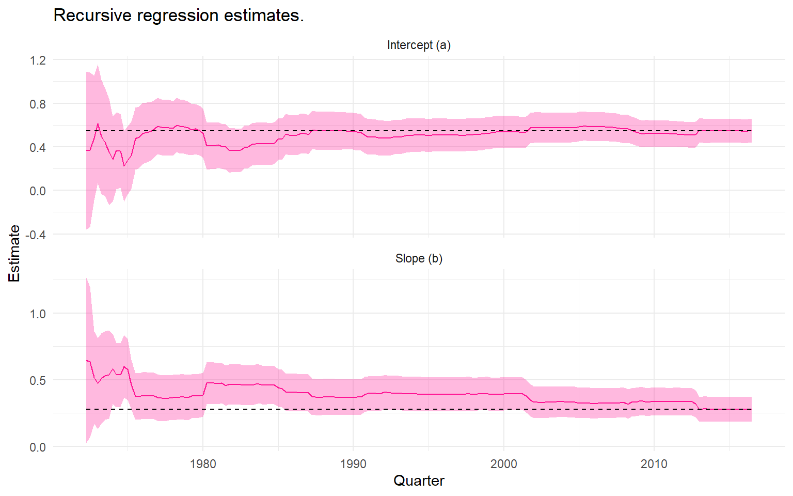
\(m_t\) is (up to the vague prior) the OLS estimate using only the data up to quarter \(t\) (Figure 26). If the relationship were constant, these estimates should settle down and then only fluctuate within their intervals. Systematic drift (for example a slope that keeps decreasing) suggests that the coefficients change over time.
Here the estimates do not settle down smoothly. After the noisy start, the slope stays around 0.4 to 0.5 until the early 1980s and then drifts down to the full-sample value of about 0.28, with sudden jumps around 1980, 2001 and 2013. Even after 100 or more quarters a single quarter can move the recursive slope noticeably, which suggests that a few quarters with unusually large income changes are influential, or that the relationship has changed over time.
Recursive estimates are a weak test, though, because every new estimate still uses all the earlier data. A more direct approach is to let the coefficients follow random walks (\(W > 0\)) and compare the likelihoods.
# Static (W = 0) vs time-varying (W estimated) coefficients:
build_static = function(p) dlmModReg(z_us, dV = exp(p[1]), dW = c(0, 0))
build_tvp = function(p) dlmModReg(z_us, dV = exp(p[1]), dW = exp(p[2:3]))
fit_static = dlmMLE(y_us, parm = log(var(y_us)), build = build_static, method = "BFGS")
fit_tvp = dlmMLE(y_us, parm = c(log(var(y_us)), -5, -5), build = build_tvp)
kable(data.frame(
Model = c("Static coefficients", "Time-varying coefficients"),
Parameters = c(1, 3),
neg_loglik = c(fit_static$value, fit_tvp$value),
AIC = c(2 * fit_static$value + 2 * 1, 2 * fit_tvp$value + 2 * 3)
), digits = 2, row.names = FALSE, escape = FALSE,
col.names = c("Model", "Parameters", "$-\\log L$", "AIC"))| Model | Parameters | \(-\log L\) | AIC |
|---|---|---|---|
| Static coefficients | 1 | 20.07 | 42.15 |
| Time-varying coefficients | 3 | 9.56 | 25.13 |
signif(exp(fit_tvp$par), 3) # V, W_a, W_b[1] 0.19500 0.03280 0.00647The time-varying coefficient model has a much lower AIC (25.1 vs 42.1), and neither coefficient variance is close to zero (\(\hat{W}_a = 0.033\), \(\hat{W}_b =0.0065\)). The observation variance drops from about 0.36 to 0.2. So the data favour coefficients that change over time. (Because \(W = 0\) lies on the boundary of the parameter space, the usual \(\chi^2\) reference distribution for a likelihood ratio test does not apply, but the AIC difference is large enough for this not to matter.) The smoothed coefficients (Figure 27) show how the relationship evolved. The slope is highest (about 0.5 to 0.6) in the 1970s and falls to around 0.1 after 2000, so consumption growth has become less sensitive to income growth. The intercept moves a lot and drops sharply in the 2008–2009 recession, so the random-walk intercept also picks up slow movements in consumption growth that income does not explain:

dlmmod_us = dlmModReg(z_us, dV = 1, dW = c(0, 0)) # default prior: m0 = 0, C0 = 1e7 I
filt_us = dlmFilter(y_us, mod_us)
# Largest difference between own and dlm filtered coefficients:
max(abs(filt_us$m[-1, ] - coef_path))[1] 1.337001e-09dlmModReg() uses the same vague prior, so dlmFilter() gives the same sequence of coefficient estimates as my own filter.